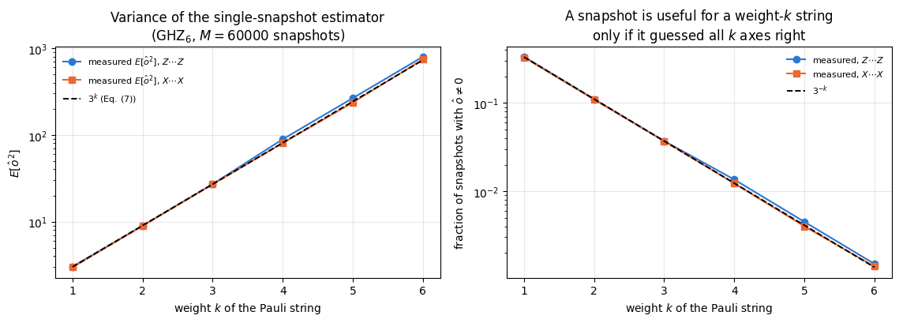
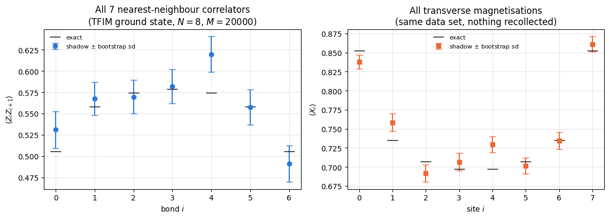
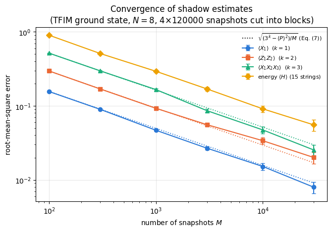
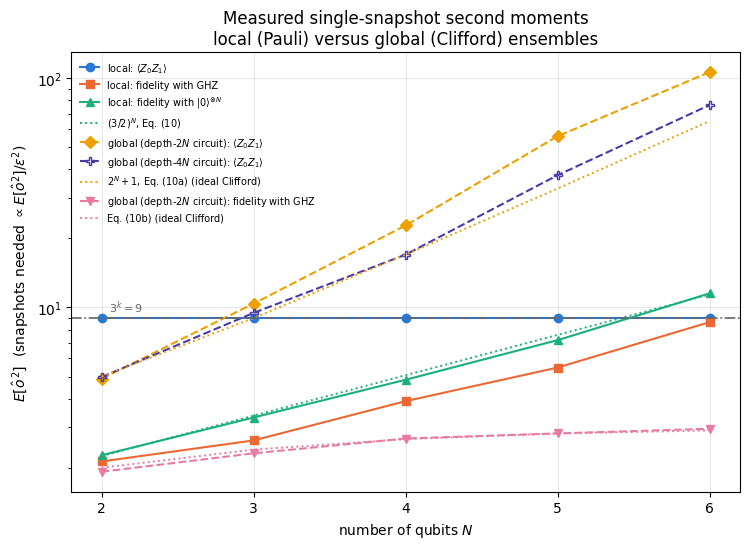
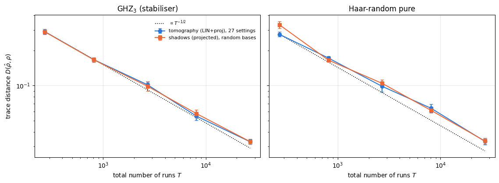
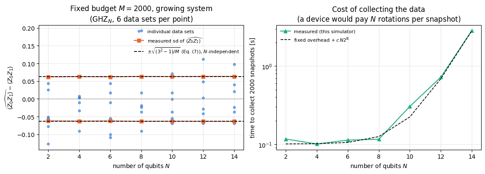

Quantum Many-Body Simulation — Chapter 8 — Quantum information protocols
1. Introduction and motivation
The previous notebook, 23 — quantum state tomography, ended at a wall. Full tomography needs \(3^N\) measurement settings to pin down the \(4^N-1\) real parameters of a density matrix, and every one of those parameters must be measured to a useful accuracy. Beyond \(N\approx10\) the experiment alone is out of reach, and the reconstruction is worse.
A laboratory rarely needs all \(4^N\) numbers. It needs an energy \(\langle H\rangle\), a handful of correlators \(\langle Z_iZ_j\rangle\), the fidelity with one target state, an entanglement witness, a few subsystem entropies: a list of \(K\) numbers with \(K\) in the tens or hundreds, far fewer than \(4^N\). Predicting \(K\) numbers need not cost as much as reconstructing the whole state.
In 2018 Scott Aaronson formulated the shadow tomography problem — predict \(K\) observables of an unknown state using a number of copies growing only polylogarithmically in \(K\), i.e. like a power of \(\log K\) — and proved it is possible in principle. In 2020 Huang, Kueng and Preskill turned the idea into a concrete measurement protocol:
Measure every qubit along a randomly chosen axis. Write down which axes you chose and which bits came out. Repeat \(M\) times. That list of \(2NM\) integers, the classical shadow, is enough to predict, after the fact, the expectation value of any observable you later become interested in.
No setting list is decided in advance, nothing is reconstructed, and the state is never stored. Each measurement record is converted into a classical snapshot\(\hat\rho_m\) — a little \(2^N\times2^N\) object with the property that its average over the randomness is exactly \(\rho\). Any expectation value is then a plain sample mean, with a variance we can compute.
What we will do.
The measurement channel. Averaged over the random choices, the measurement acts on the state as a linear map, \(\mathcal M(\rho)=\mathbb E[\,U^\dagger\vert b\rangle\langle b\vert U\,]\). We derive it for random single-qubit Pauli bases, where it is the depolarising channel of notebook 07 that shrinks the Bloch vector by \(1/3\), invert it exactly, \(\mathcal M^{-1}(A)=3A-\mathrm{Tr}(A)\mathbb 1\), and check the inverse numerically (Sections 3–4).
The estimator. One snapshot gives an unbiased estimate of every observable at once. For a Pauli string of weight \(k\) (acting non-trivially on \(k\) qubits) the estimator collapses to a product of signs, and we prove (and measure) that its variance is exactly \(3^k-\langle P\rangle^2\) — independent of \(N\) (Sections 5–6).
How many snapshots. The shadow norm, which bounds the variance of every estimate, the \(\log K\) sample complexity, and median of means, a robust alternative to the plain average — derived from Chebyshev plus Hoeffding, implemented, and then measured against the plain sample mean, which it does not beat at the budgets this notebook can afford (Section 6).
One data set, many observables. From a single set of \(M\) snapshots of the ground state of an eight-qubit transverse-field Ising chain at its critical point (notebook 11) we predict \(\langle X_1\rangle\), \(\langle Z_1Z_2\rangle\), \(\langle X_1X_2X_3\rangle\), all nearest-neighbour correlators and the energy, with bootstrap error bars, and watch everything converge as \(M^{-1/2}\) (Sections 7–8).
Other random ensembles. The 24-element single-qubit Clifford group, generated by \(H\) and \(S\), gives exactly the same channel as random Pauli bases (we prove it and check it to machine precision). Entangling global Clifford circuits, built from \(H\), \(S\) and CNOT, give a completely different channel, \(\mathcal M^{-1}(A)=(2^N+1)A-\mathrm{Tr}(A)\mathbb 1\), which we derive from the 2-design property (the ensemble reproduces all second moments of Haar-random unitaries, notebook 10) and verify numerically for the ensemble we actually sample (a depth-\(2N\) random Clifford circuit, used for every global-shadow number; it reproduces the second moments of the Clifford group, and a depth-\(4N\) circuit is added in one check of the third moments). The two are complementary: local shadows are cheap for local observables and exponentially expensive for a fidelity; global shadows are the other way round (Sections 9–10).
Comparison and scaling. Reconstruct \(\rho\) for \(N=3\) and compare with the linear-inversion and projected estimators of notebook 23 at an equal total shot budget; then push local observables to \(N=14\) and watch the cost not grow (Sections 11–12).
What you will learn
Physics
what a randomised measurement is, and why averaging over random bases produces a depolarising channel;
the difference between reconstructing a state and predicting observables, and why only the second scales to large \(N\);
why the accuracy of a \(k\)-local observable does not depend on the system size, while the accuracy of a fidelity does;
unitary \(2\)- and \(3\)-designs, and what the Clifford group has to do with all of this.
Numerical methods
inverting a linear map on operators (a superoperator) and checking it by building its matrix;
unbiased estimators, their variance, the shadow norm, and Chebyshev/Hoeffding sample-complexity bounds;
median of means as a robust estimator for heavy-tailed random variables;
the bootstrap applied to a data set of snapshots;
Monte-Carlo verification of a moment condition (here: a 2-design property) with error bars and wrong controls.
Implementation practice
vmap over snapshots with one PRNG key each, and chunking a vmap so that it does not exhaust memory;
turning “a product of single-qubit \(2\times2\) matrices” into a gather plus a chain of apply_gate einsums;
one einsum for a whole superoperator;
estimating hundreds of observables from one integer array without ever building a \(2^N\times2^N\) matrix.
23 — quantum state tomography: this notebook is its direct continuation. We reuse its notation without re-deriving it — the Pauli vector \(r_P=\langle P\rangle\), the expansion \(\rho=2^{-N}\sum_Pr_PP\), measurement settings, shots, and its linear-inversion estimator, which we use here as the reference to beat (or not) at an equal shot budget.
Conventions. Qubit \(q\) = tensor axis \(q\); \(\vert0\rangle\) is the \(+1\) eigenstate of \(Z\); an outcome bit \(s_q\in\{0,1\}\) means the eigenvalue \((-1)^{s_q}\). In notebook 23 the letter \(M\) was the number of shots per setting; here \(M\) is the number of snapshots, i.e. the total number of runs of the machine. When we compare the two methods we always compare the total number of runs, which we call \(T\).
Configuration
Every notebook of this course starts with the same cell. Choose where to run (DEVICE) and the floating-point precision (PRECISION): "double" = float64/complex128 (default, recommended for physics), "single" = float32/complex64 (half the memory, faster on consumer GPUs, but watch the round-off). All code below derives its dtypes from RDTYPE/CDTYPE and its check tolerances from TOL, so nothing else needs to change.
Code
# ==============================================================================# CONFIGURATION -- adapt to your hardware, then run the notebook top to bottom# ==============================================================================DEVICE ="auto"# "auto": use a GPU if JAX finds one, else CPU | "cpu" | "gpu"PRECISION ="double"# "double": float64/complex128 | "single": float32/complex64import osif DEVICE =="cpu": os.environ["JAX_PLATFORMS"] ="cpu"# must be set BEFORE jax is importedimport stringfrom functools import partialimport mathimport numpy as npimport jaximport jax.numpy as jnpfrom jax import lax# Precision is configurable: "double" = float64/complex128 (default; needed for long time evolutions and# tight validation), "single" = float32/complex64 (half the memory, faster on consumer GPUs).# In a notebook PRECISION is defined in the Configuration cell; for this module use the env var QE_PRECISION.PRECISION =globals().get("PRECISION", os.environ.get("QE_PRECISION", "double"))jax.config.update("jax_enable_x64", PRECISION =="double")RDTYPE = jnp.float64 if PRECISION =="double"else jnp.float32 # real dtypeCDTYPE = jnp.complex128 if PRECISION =="double"else jnp.complex64 # complex dtype of all states/operatorsTOL =1e-10if PRECISION =="double"else1e-4# tolerance for sanity checks (asserts)_LETTERS = string.ascii_letters # the 52 einsum index labels a-z, A-Zimport timeimport matplotlib.pyplot as pltif DEVICE =="gpu"and jax.default_backend() =="cpu":print("WARNING: DEVICE='gpu' requested but JAX found no GPU -- running on CPU.")print(f"JAX {jax.__version__} | backend: {jax.default_backend()} | devices: {jax.devices()}")print(f"precision: {PRECISION} -> real {RDTYPE.__name__}, complex {CDTYPE.__name__}, check tolerance TOL={TOL:g}")
JAX 0.11.0 | backend: cpu | devices: [CpuDevice(id=0)]
precision: double -> real float64, complex complex128, check tolerance TOL=1e-10
2. Engine recap and helpers
From the engine we take the einsum gate application, the state constructors, the matrix-free Pauli expectation values, the transverse-field Ising Hamiltonian with its Lanczos ground state, and the three shadow primitives that this notebook is about: collect_pauli_shadows (the randomised-measurement data generator), shadow_estimate_pauli (the single-snapshot Pauli estimator) and shadow_snapshot_dm (the dense single-snapshot state estimate). Everything else is built below from scratch.
Engine recap — the simulator primitives used in this notebook (click to expand)
# ==============================================================================# ENGINE RECAP: the functions of quantum_engine.py (SmoQ.jax) used in this notebook.# Each one is derived, with its mathematics and an independent check, in notebook 08b# (Chapter 3), 'Building the quantum simulator engine'.# States are rank-N tensors of shape (2,)*N; every operator acts through ONE einsum.# ==============================================================================# ----------------------------------------------------------------------------# 1. Elementary matrices: Paulis, Clifford generators, rotations# ----------------------------------------------------------------------------I2 = jnp.eye(2, dtype=CDTYPE)X = jnp.array([[0, 1], [1, 0]], dtype=CDTYPE)Y = jnp.array([[0, -1j], [1j, 0]], dtype=CDTYPE)Z = jnp.array([[1, 0], [0, -1]], dtype=CDTYPE)H = jnp.array([[1, 1], [1, -1]], dtype=CDTYPE) / jnp.sqrt(2.0) # Hadamard: Z-basis <-> X-basisS = jnp.array([[1, 0], [0, 1j]], dtype=CDTYPE) # phase gate, S^2 = ZSDG = S.conj().TPAULI = {"I": I2, "X": X, "Y": Y, "Z": Z}CNOT = jnp.array([[1, 0, 0, 0], [0, 1, 0, 0], [0, 0, 0, 1], [0, 0, 1, 0]], dtype=CDTYPE)XX = jnp.kron(X, X)YY = jnp.kron(Y, Y)ZZ = jnp.kron(Z, Z)# ----------------------------------------------------------------------------# 2. THE core primitive: a k-qubit operator acting on a tensor through ONE einsum# ----------------------------------------------------------------------------def apply_gate(psi, U, qubits):"""Apply a k-qubit operator U to the axes `qubits` of the tensor `psi`. MATH ---- One qubit (k=1), target q: psi'[s_0,..,a,..,s_{N-1}] = sum_b U[a,b] psi[s_0,..,b,..,s_{N-1}] Two qubits (k=2), targets (q1,q2); the 4x4 matrix is reshaped to U[a1,a2,b1,b2]: psi'[.., a1, .., a2, ..] = sum_{b1,b2} U[a1,a2,b1,b2] psi[.., b1, .., b2, ..] This IS the action of (1 x .. x U x .. x 1) -- written without ever building it. EINSUM TRANSLATION (generated automatically below) ------------------ N=3, q=1 : "db,abc->adc" d = new (output) index of qubit 1 N=4, q=(1,3) : "efbd,abcd->aecf" e,f = new indices of qubits 1 and 3 Recipe: label the axes of psi with letters a,b,c,...; give every target qubit a NEW letter (the next unused ones); U carries (new letters)+(old letters of the targets); the output is psi's labels with the target letters replaced by the new ones. IMPLEMENTATION NOTES -------------------- * reshape of U: (2^k,2^k) -> (2,)*2k. Row index = (a1..ak), column = (b1..bk), and the FIRST qubit in `qubits` is the most significant bit of the small matrix, i.e. it corresponds to the LEFT factor of kron(A,B). * `qubits` may be any distinct axes in any order: non-neighbouring gates cost the same. * U need not be unitary: projectors, Kraus operators and Hamiltonian terms reuse this. * psi may be ANY tensor with those axes of size 2: a state (rank N), a density tensor (rank 2N: ket axes 0..N-1, bra axes N..2N-1), ... COST O(2^k * 2^N) operations, O(2^N) memory (dense matrix: O(4^N) both). JAX `qubits` must be static Python ints (they define the einsum string); psi and U are traced, so the function can sit inside jit / grad / vmap / scan. """ qubits =tuple(int(q) for q in qubits) k, n =len(qubits), psi.ndim U = jnp.asarray(U, dtype=psi.dtype).reshape((2,) * (2* k)) # matrix -> rank-2k tensor inp =list(_LETTERS[:n]) # labels of psi's axes new = _LETTERS[n:n + k] # fresh labels for the outputs out = inp.copy()for a, q inzip(new, qubits): out[q] = a # target axes get the new labels sub =f"{''.join(new)}{''.join(inp[q] for q in qubits)},{''.join(inp)}->{''.join(out)}"return jnp.einsum(sub, U, psi)# ----------------------------------------------------------------------------# 3. State preparation# ----------------------------------------------------------------------------_KETS = {"0": [1, 0], "1": [0, 1], "+": [1, 1], "-": [1, -1], "r": [1, 1j], "l": [1, -1j]}def product_state(spec):"""Product state from a string, one character per qubit: product_state('01+-') = |0>|1>|+>|->. ('r','l' = the +1/-1 eigenstates of Y.) MATH psi[s_0,...,s_{N-1}] = v0[s_0] v1[s_1] ... v_{N-1}[s_{N-1}] EINSUM an outer product = einsum with NO summed index: "a,b,c->abc". A product state needs only 2N numbers; entanglement is what makes all 2^N necessary. """ vecs = [jnp.array(_KETS[c], dtype=CDTYPE) / jnp.linalg.norm(jnp.array(_KETS[c], dtype=CDTYPE))for c in spec] n =len(vecs) sub =",".join(_LETTERS[i] for i inrange(n)) +"->"+ _LETTERS[:n]return jnp.einsum(sub, *vecs)def ghz_state(N):"""GHZ state (|0...0> + |1...1>)/sqrt(2): two non-zero entries of the rank-N tensor.""" psi = jnp.zeros((2,) * N, dtype=CDTYPE)return psi.at[(0,) * N].set(1/ jnp.sqrt(2.0)).at[(1,) * N].set(1/ jnp.sqrt(2.0))def bell_state(kind="phi+"):"""The four Bell states as (2,2) tensors: phi+- = (|00> +- |11>)/sqrt2, psi+- = (|01> +- |10>)/sqrt2.""" a =1/ np.sqrt(2) v = {"phi+": [a, 0, 0, a], "phi-": [a, 0, 0, -a], "psi+": [0, a, a, 0], "psi-": [0, a, -a, 0]}[kind]return jnp.array(v, dtype=CDTYPE).reshape(2, 2)def haar_state(key, N):"""Haar-random pure state: a complex Gaussian vector, normalised. (The Gaussian measure is unitarily invariant, so the direction is uniformly distributed.) `key` is an explicit JAX PRNG key -- same key, same state: reproducible science.""" k1, k2 = jax.random.split(key) v = jax.random.normal(k1, (2,) * N) +1j* jax.random.normal(k2, (2,) * N)return (v / jnp.linalg.norm(v)).astype(CDTYPE)def to_dm(psi):"""Pure state -> density TENSOR rho[s..; s'..] = psi[s..] psi^*[s'..] (rank 2N). An outer product: einsum "ab,AB->abAB" -- here via the equivalent tensordot(axes=0)."""return jnp.tensordot(psi, jnp.conj(psi), axes=0)def dm_matrix(rho):"""View a rank-2N density tensor as an ordinary 2^N x 2^N matrix (a reshape, no copy of meaning).""" d =int(round(np.sqrt(rho.size)))return rho.reshape(d, d)# ----------------------------------------------------------------------------# 4. Reduced density matrices & observables (matrix-free)# ----------------------------------------------------------------------------def apply_pauli_string(psi, ops):"""Apply a Pauli string P = P_0 x P_1 x ... to psi. `ops` is a dict {qubit: 'X'|'Y'|'Z'} or a string like 'XIZY' (one letter per qubit; 'I' skipped). N single-qubit einsums -- cost O(N 2^N) -- instead of one 2^N x 2^N matrix."""ifisinstance(ops, str): ops = {q: p for q, p inenumerate(ops) if p !="I"}for q, p in ops.items(): psi = apply_gate(psi, PAULI[p], [q])return psidef expect_pauli_string(psi, ops):"""<psi|P|psi> = <psi | (P psi)> : apply the string, then ONE inner product (jnp.vdot conjugates its first argument). Works for strings of any weight, e.g. the N-body correlator <X X ... X>."""return jnp.real(jnp.vdot(psi, apply_pauli_string(psi, ops)))# ----------------------------------------------------------------------------# 5. State characteristics: entropies, fidelity, negativity# ----------------------------------------------------------------------------def trace_distance(rho, sigma):"""D = (1/2)||rho - sigma||_1 = (1/2) sum_i |eigenvalue_i(rho - sigma)| (Hermitian difference)."""return0.5* jnp.sum(jnp.abs(jnp.linalg.eigvalsh(rho - sigma)))# ----------------------------------------------------------------------------# 6. Measurements (Born rule, collapse, sampling)# ----------------------------------------------------------------------------_BASIS_ROT = {"Z": I2, "X": H, "Y": H @ SDG} # U maps the eigenbasis of the Pauli to |0>,|1>: P = U^dag Z U# ----------------------------------------------------------------------------# 8. Hamiltonians as lists of local terms; H|psi> matrix-free# ----------------------------------------------------------------------------def heisenberg_terms(N, Jxx=1.0, Jyy=1.0, Jzz=1.0, hx=0.0, hy=0.0, hz=0.0, periodic=False, bonds=None):"""Spin-1/2 Hamiltonian in Pauli convention H = sum_<ij> (Jxx X_i X_j + Jyy Y_i Y_j + Jzz Z_i Z_j) + sum_i (hx X_i + hy Y_i + hz Z_i) returned as a LIST of local terms [(qubits, small_matrix), ...] -- this list *is* our Hamiltonian. Heisenberg: Jxx=Jyy=Jzz XXZ: Jxx=Jyy!=Jzz XY: Jzz=0 TFIM: only Jzz and hx. `bonds` overrides the default open chain (any graph: ladders, 2D lattices, all-to-all, ...)."""if bonds isNone: bonds = [(i, i +1) for i inrange(N -1)] + ([(N -1, 0)] if periodic and N >2else []) terms = [((i, j), Jxx * XX + Jyy * YY + Jzz * ZZ) for (i, j) in bonds]if hx !=0or hy !=0or hz !=0: terms += [((i,), hx * X + hy * Y + hz * Z) for i inrange(N)]return termsdef apply_hamiltonian(terms, psi):"""H|psi> = sum_k h_k|psi>, every term applied with `apply_gate` (h_k is Hermitian, not unitary -- the einsum does not care). Cost O(#terms * 2^N). This matrix-vector product is ALL that Lanczos, Chebyshev and Krylov methods need, which is why they scale to N ~ 25-30.""" out = jnp.zeros_like(psi)for qubits, h in terms: out = out + apply_gate(psi, h, qubits)return outdef energy(terms, psi):"""<psi|H|psi> = Re <psi | (H psi)>."""return jnp.real(jnp.vdot(psi, apply_hamiltonian(terms, psi)))# ----------------------------------------------------------------------------# 9. Time evolution: TEBD / Trotter-Suzuki, Chebyshev, Krylov, exact# ----------------------------------------------------------------------------def lanczos(matvec, v0, m=60, reorth=True):"""m-step Lanczos iteration: orthonormal basis V of the Krylov space span{v, Hv, H^2 v, ...} in which H is TRIDIAGONAL: T = V^dag H V = tridiag(beta, alpha, beta). Recurrence w = H v_j - alpha_j v_j - beta_{j-1} v_{j-1}, alpha_j = <v_j|H|v_j>, beta_j = ||w||. `reorth=True` re-orthogonalises against all previous vectors (cures the loss of orthogonality of floating-point Lanczos at the price of O(m^2) inner products). Only `matvec` (H|psi>) is needed -> matrix-free. Returns (alphas, betas, V[m, 2,..,2]). """ v = v0 / jnp.linalg.norm(v0) V, alphas, betas = [v], [], [] w = matvec(v)for j inrange(m): a = jnp.real(jnp.vdot(V[j], w)) alphas.append(a) w = w - a * V[j] - (betas[-1] * V[j -1] if j >0else0.0)if reorth:for u in V: w = w - jnp.vdot(u, w) * u b = jnp.linalg.norm(w)if j == m -1orfloat(b) <1e-12:break betas.append(b) V.append(w / b) w = matvec(V[-1])return np.array(alphas, dtype=float), np.array(betas, dtype=float), jnp.stack(V)def lanczos_ground_state(terms, N, m=80, key=None, restarts=3):"""Ground state (E_0, |psi_0>) from restarted Lanczos: diagonalise the small T, map its lowest eigenvector back with V, use it as the next start vector. Extremal eigenvalues converge first.""" key = jax.random.PRNGKey(0) if key isNoneelse key v = haar_state(key, N) mv = jax.jit(lambda p: apply_hamiltonian(terms, p)) E =Nonefor _ inrange(restarts): a, b, V = lanczos(mv, v, m) w, S_ = np.linalg.eigh(np.diag(a) + np.diag(b, 1) + np.diag(b, -1)) v = jnp.tensordot(jnp.asarray(S_[:, 0], dtype=CDTYPE), V, axes=1) v = v / jnp.linalg.norm(v) E = w[0]returnfloat(E), v# ----------------------------------------------------------------------------# 12. Random unitaries, Clifford group, brick-wall circuits# ----------------------------------------------------------------------------def haar_unitary(key, d):"""Haar-random d x d unitary (Mezzadri's recipe): QR-decompose a complex Ginibre matrix and fix the phases of R's diagonal -- without the phase fix the distribution is NOT Haar.""" k1, k2 = jax.random.split(key) G = (jax.random.normal(k1, (d, d)) +1j* jax.random.normal(k2, (d, d))) / jnp.sqrt(2.0) Q, R = jnp.linalg.qr(G) ph = jnp.diagonal(R) / jnp.abs(jnp.diagonal(R))return Q * ph[None, :]def single_qubit_cliffords():"""The 24 single-qubit Clifford gates (modulo global phase), generated by closing {H, S} under multiplication (breadth-first search; a canonical phase makes matrices comparable).""" found = [np.eye(2, dtype=complex)] gens = [np.asarray(H), np.asarray(S)]def canon(U): i = np.flatnonzero(np.abs(U.reshape(-1)) >1e-9)[0]return U * np.exp(-1j* np.angle(U.reshape(-1)[i])) frontier = [found[0]]while frontier: nxt = []for U in frontier:for g in gens: V = canon(g @ U)ifnotany(np.allclose(V, W) for W in found): found.append(V) nxt.append(V) frontier = nxtreturn jnp.asarray(np.stack(found), dtype=CDTYPE)# ----------------------------------------------------------------------------# 13. Classical shadows (random Pauli measurements)# ----------------------------------------------------------------------------def collect_pauli_shadows(key, psi, n_shadows):"""Randomised-measurement data set (Huang, Kueng, Preskill 2020). Each snapshot: draw a basis b_q in {X,Y,Z} for every qubit, rotate, measure all qubits once. Returns (bases, bits), int arrays of shape (n_shadows, N); basis code 0=X, 1=Y, 2=Z. JAX: one snapshot is a pure function of its key -> `vmap` over keys gives all snapshots in parallel; `rots[bases[q]]` selects the rotation with a traced index (gather), so no Python branching.""" N = psi.ndim rots = jnp.stack([_BASIS_ROT["X"], _BASIS_ROT["Y"], _BASIS_ROT["Z"]])def one(k): kb, ks = jax.random.split(k) bases = jax.random.randint(kb, (N,), 0, 3) phi = psifor q inrange(N): phi = apply_gate(phi, rots[bases[q]], [q]) logp = jnp.log(jnp.clip(jnp.abs(phi.reshape(-1)) **2, 1e-300, None)) idx = jax.random.categorical(ks, logp) bits = (idx >> jnp.arange(N -1, -1, -1)) &1return bases, bitsreturn jax.vmap(one)(jax.random.split(key, n_shadows))def shadow_estimate_pauli(bases, bits, ops):"""Estimate <P> of a Pauli string `ops` = {qubit: 'X'|'Y'|'Z'} from Pauli shadows. single-snapshot estimator o = prod_{q in supp(P)} 3 * [b_q == P_q] * (-1)^{bit_q} (the factor 3 per qubit inverts the measurement channel; a snapshot contributes only if all its bases match on the support -- probability 3^{-k} -- hence variance ~ 3^k for weight-k strings). Returns (mean, standard error).""" code = {"X": 0, "Y": 1, "Z": 2} val = jnp.ones(bases.shape[0])for q, p in ops.items(): val = val *3.0* (bases[:, q] == code[p]) * (1-2* bits[:, q])return jnp.mean(val), jnp.std(val) / jnp.sqrt(val.shape[0])def shadow_snapshot_dm(bases_row, bits_row):"""Single-snapshot state estimate rho_hat = (x)_q ( 3 U_q^dag |b_q><b_q| U_q - 1 ) (dense; small N). E[rho_hat] = rho: averaging snapshots reconstructs the state.""" rots = [_BASIS_ROT["X"], _BASIS_ROT["Y"], _BASIS_ROT["Z"]] out = jnp.ones((1, 1), dtype=CDTYPE)for b, s inzip(np.asarray(bases_row), np.asarray(bits_row)): U = rots[int(b)] ket = U.conj().T[:, int(s)] out = jnp.kron(out, 3* jnp.outer(ket, ket.conj()) - I2)return out
Code
# ==============================================================================# PLOT STYLE + small helpers used throughout this notebook# ==============================================================================import itertoolsPALETTE = ["#2a78d6", "#eb6834", "#1baf7a", "#eda100", "#e87ba4", "#4a3aa7"] # colour-blind-friendly, fixed orderMARKERS = ["o", "s", "^", "D", "v", "P"]plt.rcParams.update({"axes.prop_cycle": plt.cycler(color=PALETTE), "axes.grid": True,"grid.alpha": 0.3, "font.size": 10, "legend.frameon": False})BASIS_CHARS ="XYZ"# basis code 0 = X, 1 = Y, 2 = Z (engine convention)PAULI_LETTERS ="IXYZ"def max_abs(a):"""Largest absolute entry of an array, as a Python float."""returnfloat(jnp.max(jnp.abs(jnp.asarray(a))))def pauli_labels(N):"""All 4^N Pauli-string labels, qubit 0 = leftmost letter (as in notebook 23)."""return ["".join(p) for p in itertools.product(PAULI_LETTERS, repeat=N)]def pauli_stack(N):"""Dense array of all 4^N Pauli strings, shape (4^N, 2^N, 2^N). Only ever used for N <= 3.""" mats = []for lab in pauli_labels(N): Mx = jnp.ones((1, 1), dtype=CDTYPE)for ch in lab: Mx = jnp.kron(Mx, PAULI[ch]) mats.append(Mx)return jnp.stack(mats)def rho_from_pauli_vector(r, N):"""rho = 2^{-N} sum_P r_P P (notebook 23, Eq. (1)): einsum("p,pab->ab", r, P_all) / 2^N."""return jnp.einsum("p,pab->ab", jnp.asarray(r, dtype=CDTYPE), pauli_stack(N)) /2** Ndef pauli_vector(rho_mat, N):"""r_P = Tr(rho P) for all 4^N strings: einsum("pab,ba->p", P_all, rho)."""return jnp.real(jnp.einsum("pab,ba->p", pauli_stack(N), jnp.asarray(rho_mat, dtype=CDTYPE)))
3. The idea: measure in a random basis, keep the record, predict later
3.1 The protocol
Fix an ensemble \(\mathcal U\) of unitaries — for us, first, “apply an independently chosen \(H\), \(HS^\dagger\) or \(\mathbb 1\) to every qubit”, which is the same as “measure every qubit along a random one of the axes \(x\), \(y\), \(z\)”. One snapshot is:
draw \(U\sim\mathcal U\);
apply it to the unknown state: \(\rho\to U\rho U^\dagger\);
measure all \(N\) qubits in the computational basis, obtaining a bit string \(b\in\{0,1\}^N\) with probability \(\langle b\vert U\rho U^\dagger\vert b\rangle\);
store the pair \((U,b)\) — nothing else.
Repeat \(M\) times with independent randomness. For random Pauli bases the stored data are two integer arrays of shape \((M,N)\): the basis codes and the outcome bits. That is \(2NM\) small integers — for \(N=14\) and \(M=10^5\) about \(3\) MB at one byte per integer, whereas a single density matrix of \(14\) qubits would need \(4^{14}\approx2.7\cdot10^8\) complex numbers, i.e. \(4.3\) GB.
3.2 The classical snapshot
The record \((U,b)\) says: “after rotating by \(U\) the state was found in \(\vert b\rangle\)”. Rotating back, the post-measurement state is \(U^\dagger\vert b\rangle\langle b\vert U\). That is a legitimate guess for \(\rho\), but a strongly biased one — it is always pure, and always an eigenstate of the axes we happened to choose. Its average over the protocol is
Equation (1) defines a linear map on operators, the measurement channel. It is linear in \(\rho\) because the Born probability is linear in \(\rho\). It is manifestly a quantum channel (completely positive, trace preserving), and it is not the identity: the random measurement blurs the state.
The construction of classical shadows rests on one observation: if \(\mathcal M\) can be inverted as a linear map, then
\(\hat\rho\) is the classical snapshot: an unbiased estimator of \(\rho\) with negative eigenvalues, as we will see. The negative eigenvalues are forced, because \(\hat\rho\) undoes the blurring of \(\mathcal M\). Unbiasedness gives
for every observable \(O\) simultaneously. One data set, any number of observables, decided afterwards.
Physics insight. Compare with notebook 23. There, the estimator was built after choosing which quantity to measure: the \(3^N\) settings were a deterministic sweep designed to make the map \(r\mapsto p\) invertible. Here the randomness does the work: instead of inverting a large design matrix we invert one small, highly symmetric channel, and the symmetry makes the inverse cheap.
4. The measurement channel for random Pauli bases, and its inverse
4.1 One qubit, one line of algebra
Take \(N=1\) and the ensemble “measure \(X\), \(Y\) or \(Z\), each with probability \(1/3\)”. Write the state in the Bloch form used in notebook 23,
Fix the axis \(P\). The two outcomes \(s=0,1\) correspond to the projectors \(\Pi_s=\tfrac12\big(\mathbb 1+(-1)^sP\big)\), which is exactly the engine’s convention \(P=U^\dagger ZU\) with \(U_X=H\), \(U_Y=HS^\dagger\), \(U_Z=\mathbb 1\): the rotated-back projector \(U^\dagger\vert s\rangle\langle s\vert U\)is\(\Pi_s\). Their probabilities are
In the last form, the measurement channel of random Pauli bases is the depolarising channel with parameter \(f=1/3\), in the parametrisation \(\mathcal D_f(\rho)=f\rho+(1-f)\tfrac{\mathbb 1}{2}\) used by the code below. It shrinks the Bloch vector by a factor \(3\) and leaves the identity alone, because a randomly chosen axis records only one of the three Bloch components and the two orthogonal components average to zero. (Notebook 07 parametrises the same family by the error probability \(p\) in \(\rho\to(1-p)\rho+\tfrac p3(X\rho X+Y\rho Y+Z\rho Z)\), which shrinks the Bloch vector by \(1-\tfrac{4p}{3}\); \(f=\tfrac13\) is \(p=\tfrac12\). The two conventions are used side by side in the literature — always read off the Bloch-shrinkage factor rather than the letter.)
4.2 The inverse
Equation (3) holds for any Hermitian \(A\), not only for states, if we write it as \(\mathcal M(A)=\tfrac13A+\tfrac13\mathrm{Tr}(A)\,\mathbb 1\) (check: for \(A=\rho\), \(\mathrm{Tr}A=1\) and \(\tfrac13\mathrm{Tr}(A)\mathbb 1=\tfrac23\cdot\tfrac{\mathbb 1}{2}\), as in Eq. (3)). Now guess the inverse and verify:
The map \(\mathcal M^{-1}\) is linear but not positive, hence not a channel: applied to \(\vert0\rangle\langle0\vert\) it gives \(\mathrm{diag}(2,-1)\), an operator with a negative eigenvalue. This is unavoidable and harmless, since the estimator only requires the average of the snapshots to be a state.
4.3 Many qubits: everything factorises
Each qubit is measured independently, so the ensemble is a product, \(U=\bigotimes_qU_q\), and the sum over \(b\) factorises into sums over \(b_q\). Therefore
where \(P_q\) is the axis measured on qubit \(q\) and the second form follows from \(U_q^\dagger\vert b_q\rangle\langle b_q\vert U_q=\tfrac12(\mathbb 1+(-1)^{b_q}P_q)\). There are only six possible single-qubit factors (three axes \(\times\) two outcomes), so the snapshot is completely described by the \(2N\) integers we stored. Equation (5) is the engine’s shadow_snapshot_dm.
Code
# ==============================================================================# STEP 1: the six single-qubit snapshot matrices, and the measurement channel as a matrix# ==============================================================================ROTS = jnp.stack([_BASIS_ROT["X"], _BASIS_ROT["Y"], _BASIS_ROT["Z"]]) # U_X = H, U_Y = H S^dag, U_Z = 1# SNAP1[basis, bit] = 3 U^dag |bit><bit| U - 1 = (1 + 3 (-1)^bit P)/2 (Eq. (5), one factor)SNAP1 = jnp.stack([jnp.stack([3.0* jnp.outer(ROTS[b].conj().T[:, s], ROTS[b].conj().T[:, s].conj()) - I2for s inrange(2)]) for b inrange(3)]) # shape (3, 2, 2, 2)def measurement_channel(Us, weights=None):"""The measurement channel of Eq. (1) for a FINITE ensemble of unitaries, as a d^2 x d^2 matrix. MATH M(A) = sum_u w_u sum_b <b|U_u A U_u^dag|b> U_u^dag |b><b| U_u In components, with |chi_ub> = U_u^dag |b>: M[(a,b'),(i,j)] = sum_{u,b} w_u conj(U[u,b,a]) U[u,b,b'] U[u,b,i] conj(U[u,b,j]) EINSUM "u,uba,ubc,ubi,ubj->acij" -- the four factors are the two indices of |chi><chi| and the two of the Born probability; reshaping (d,d,d,d) -> (d^2,d^2) gives the superoperator acting on vec(A). COST O(n_U d^5); only ever used for d = 2, 4, 8. """ Us = jnp.asarray(Us, dtype=CDTYPE) n, d = Us.shape[0], Us.shape[1] w = jnp.full((n,), 1.0/ n, dtype=RDTYPE) if weights isNoneelse jnp.asarray(weights, dtype=RDTYPE) S = jnp.einsum("u,uba,ubc,ubi,ubj->acij", w.astype(CDTYPE), Us.conj(), Us, Us, Us.conj())return S.reshape(d * d, d * d)def depolarising_channel_matrix(d, f):"""Superoperator of the map A -> f A + (1-f)/d * Tr(A) 1 (the 'blurring' family we expect).""" eye = jnp.eye(d, dtype=CDTYPE) ident = jnp.einsum("ai,cj->acij", eye, eye) # A -> A trace = jnp.einsum("ac,ij->acij", eye, eye) / d # A -> Tr(A) 1 / dreturn (f * ident + (1- f) * trace).reshape(d * d, d * d)# --- CHECKPOINT: one qubit, the channel of random Pauli bases IS depolarising with f = 1/3 ------------S_pauli = measurement_channel(ROTS)err_dep = max_abs(S_pauli - depolarising_channel_matrix(2, 1.0/3.0))print(f"CHECKPOINT one qubit, M(A) vs depolarising with f = 1/3 : max error = {err_dep:.1e}")assert err_dep <1e3* TOL# the inverse, Eq. (4), as a matrix: M^{-1}(A) = 3A - Tr(A) 1S_inv =3.0* jnp.einsum("ai,cj->acij", jnp.eye(2, dtype=CDTYPE), jnp.eye(2, dtype=CDTYPE)).reshape(4, 4) \- jnp.einsum("ac,ij->acij", jnp.eye(2, dtype=CDTYPE), jnp.eye(2, dtype=CDTYPE)).reshape(4, 4)err_inv = max_abs(S_inv @ S_pauli - jnp.eye(4, dtype=CDTYPE))print(f"CHECKPOINT M^(-1) M = identity superoperator : max error = {err_inv:.1e}")assert err_inv <1e3* TOLprint("\nthe six single-qubit snapshot matrices 3 U^dag|b><b|U - 1 = (1 + 3(-1)^b P)/2 :")for b inrange(3):for s inrange(2): m = np.asarray(SNAP1[b, s]) row =" ".join(f"{m[i, j].real:+.1f}{m[i, j].imag:+.1f}i"for i inrange(2) for j inrange(2)) ev = np.linalg.eigvalsh(m)print(f" P = {BASIS_CHARS[b]}, outcome bit {s}: [{row}] eigenvalues {ev[0]:+.1f}, {ev[1]:+.1f}")
CHECKPOINT one qubit, M(A) vs depolarising with f = 1/3 : max error = 3.3e-16
CHECKPOINT M^(-1) M = identity superoperator : max error = 4.4e-16
the six single-qubit snapshot matrices 3 U^dag|b><b|U - 1 = (1 + 3(-1)^b P)/2 :
P = X, outcome bit 0: [+0.5+0.0i +1.5+0.0i +1.5+0.0i +0.5+0.0i] eigenvalues -1.0, +2.0
P = X, outcome bit 1: [+0.5+0.0i -1.5+0.0i -1.5-0.0i +0.5+0.0i] eigenvalues -1.0, +2.0
P = Y, outcome bit 0: [+0.5+0.0i +0.0-1.5i +0.0+1.5i +0.5+0.0i] eigenvalues -1.0, +2.0
P = Y, outcome bit 1: [+0.5+0.0i +0.0+1.5i +0.0-1.5i +0.5+0.0i] eigenvalues -1.0, +2.0
P = Z, outcome bit 0: [+2.0+0.0i +0.0+0.0i +0.0+0.0i -1.0+0.0i] eigenvalues -1.0, +2.0
P = Z, outcome bit 1: [-1.0+0.0i +0.0+0.0i +0.0+0.0i +2.0+0.0i] eigenvalues -1.0, +2.0
The print-out settles two things. First, the channel of random Pauli bases is the depolarising channel with \(f=1/3\), and Eq. (4) really inverts it — both to machine precision, and both obtained from the definition Eq. (1) by brute force, not from our algebra. Second, every one of the six single-qubit snapshot matrices has eigenvalues \(+2\) and \(-1\): a snapshot is a negative object with trace \(1\). Averaging many of them is what produces a physical state.
4.4 Collecting snapshots with the engine
collect_pauli_shadows(key, psi, n_shadows) does exactly steps 1–4 of Section 3.1: it draws \(N\) basis codes, rotates the state with \(N\)apply_gate einsums, samples one bit string from the Born distribution, and returns the two integer arrays. One snapshot is a pure function of one PRNG key, so vmap over jax.random.split(key, M) produces all \(M\) snapshots in parallel.
JAX practice.vmap is not free in memory: it materialises the batched intermediate, here the rotated state of every snapshot, i.e. \(M\cdot2^N\) complex numbers. For \(N=14\) and \(M=10^5\) that is \(26\) GB, more than the memory of a typical machine. The fix is chunking: run the vmap on blocks of a few thousand snapshots and concatenate. The block size is a pure memory-versus-overhead knob and changes no result — with jax.random.fold_in each block gets its own reproducible key.
Code
# ==============================================================================# STEP 2: chunked collection of a shadow data set# ==============================================================================_collect_jit = jax.jit(collect_pauli_shadows, static_argnums=(2,)) # cache: one compile per (N, chunk)def collect_shadows(key, psi, n_shadows, chunk=4096):"""M randomised-measurement snapshots of the pure state `psi`, collected in blocks. MATH one snapshot = (random basis per qubit, one bit string sampled from the Born rule) IMPL `collect_pauli_shadows` vmaps over keys; we call it on blocks of `chunk` snapshots so that the batched intermediate (chunk x 2^N complex numbers) stays small. Block j uses fold_in(key, j). COST O(M N 2^N) time, O(chunk 2^N) memory. Returns (bases, bits), int arrays of shape (M, N). """ bs, ts, done = [], [], 0while done < n_shadows: c =min(chunk, n_shadows - done) b, t = _collect_jit(jax.random.fold_in(key, done), psi, c) bs.append(b); ts.append(t); done += creturn jnp.concatenate(bs), jnp.concatenate(ts)def shadow_state(bases, bits):"""Average of the classical snapshots, rho_shadow = (1/M) sum_m (x)_q SNAP1[c_mq, b_mq] (small N only). MATH Eq. (5) averaged; E[rho_shadow] = rho and rho_shadow -> rho as M^{-1/2}. EINSUM the Kronecker product is grown one qubit at a time: "mab,mcd->macbd" followed by a reshape glues the (2,2) block of qubit q onto the (2^q, 2^q) block of the qubits before it. COST O(M 4^N) time and memory -- only for N <= 4; the point of shadows is NOT to do this. """ Mn, N = bases.shape out = jnp.ones((Mn, 1, 1), dtype=CDTYPE)for q inrange(N): A = SNAP1[bases[:, q], bits[:, q]] # (M, 2, 2) gather out = jnp.einsum("mab,mcd->macbd", out, A).reshape(Mn, 2** (q +1), 2** (q +1))return out.mean(0)# --- a first data set: 2 qubits, so that we can look at the snapshots as matrices -------------------psi_bell = bell_state("phi+")bases_demo, bits_demo = collect_shadows(jax.random.PRNGKey(0), psi_bell, 6)print("six raw snapshots of the Bell state |Phi+> (this is ALL the data):")for m inrange(6): bb ="".join(BASIS_CHARS[int(c)] for c in bases_demo[m]) ss ="".join(str(int(c)) for c in bits_demo[m])print(f" snapshot {m}: bases {bb} bits {ss}")rho_hat_0 = shadow_snapshot_dm(bases_demo[0], bits_demo[0])print("\nthe classical snapshot rho_hat of the first record, Eq. (5):")print(np.round(np.asarray(jnp.real(rho_hat_0)), 3))print(f" trace = {float(jnp.real(jnp.trace(rho_hat_0))):.3f} "f"eigenvalues = {np.round(np.asarray(jnp.linalg.eigvalsh(rho_hat_0)), 3)}")
six raw snapshots of the Bell state |Phi+> (this is ALL the data):
snapshot 0: bases YY bits 01
snapshot 1: bases ZX bits 01
snapshot 2: bases YY bits 01
snapshot 3: bases XX bits 11
snapshot 4: bases XX bits 00
snapshot 5: bases XX bits 00
the classical snapshot rho_hat of the first record, Eq. (5):
[[ 0.25 0. 0. 2.25]
[ 0. 0.25 -2.25 0. ]
[ 0. -2.25 0.25 0. ]
[ 2.25 0. 0. 0.25]]
trace = 1.000 eigenvalues = [-2. -2. 1. 4.]
The data are six rows of “which axes, which bits” — no amplitudes, no matrices. The snapshot built from the first row has unit trace and eigenvalues \(\{4,-2,-2,1\}\): not a density matrix. Its average will be one.
4.5 Checkpoint: unbiasedness
The claim to test is Eq. (2): \(\mathbb E[\hat\rho]=\rho\). We average many snapshots and compare the error with its predicted size, after verifying that our batched shadow_state agrees with the engine’s explicit, one-snapshot-at-a-time shadow_snapshot_dm. The predicted size follows from Section 6 below: each Pauli coordinate \(r_P\) of the snapshot average has variance \((3^{w_P}-r_P^2)/M\) for a string of weight \(w_P\), and \(\lVert\Delta\rho\rVert_F^2=2^{-N}\sum_{P\neq\mathbb 1}(\Delta r_P)^2\), so
using \(\sum_P3^{w_P}=(1+3\cdot3)^N\). For the two-qubit Bell state \(C=(99-3)/4=24\). As a wrong control we average the post-measurement states \(U^\dagger\vert b\rangle\langle b\vert U\) without applying \(\mathcal M^{-1}\), i.e. without the factor \(3\) per qubit. Their average converges to \(\mathcal M(\rho)\), whose weight-2 Pauli coordinates are \(r_P/9\); for the Bell state (\(r_{XX}=-r_{YY}=r_{ZZ}=1\)) this misses \(\rho\) by \(\lVert\mathcal M(\rho)-\rho\rVert_F=\sqrt{3\,(8/9)^2/4}=0.77\). (On a state whose non-trivial Pauli coordinates all vanish, such as the maximally mixed state, the missing factor \(3\) would be invisible, which is why the test state matters.)
Code
# ==============================================================================# CHECKPOINT: E[rho_hat] = rho, and the 1/sqrt(M) approach to it# ==============================================================================rho_bell_m = dm_matrix(to_dm(psi_bell))bb, tt = collect_shadows(jax.random.PRNGKey(1), psi_bell, 200)slow =sum(shadow_snapshot_dm(bb[m], tt[m]) for m inrange(200)) /200# engine, one snapshot at a timeerr_impl = max_abs(shadow_state(bb, tt) - slow)print(f"CHECKPOINT batched `shadow_state` vs the engine's `shadow_snapshot_dm`: max error = {err_impl:.1e}")assert err_impl <1e3* TOLC_BELL =24.0# (99 - 3) / 4, see the text aboveSNAP_NOINV = (SNAP1 + I2) /3.0# WRONG CONTROL: U^dag|b><b|U, i.e. M^{-1} omittedprint(f"\n{'M':>8s}{'||mean(rho_hat) - rho||_F':>26s}{'predicted sqrt(C/M)':>20s}{'no M^-1 (wrong)':>16s}")for M_chk in (100, 400, 1600, 6400, 25600): bb, tt = collect_shadows(jax.random.PRNGKey(1), psi_bell, M_chk) err =float(jnp.linalg.norm(shadow_state(bb, tt) - rho_bell_m)) noinv = (jnp.einsum("mab,mcd->macbd", SNAP_NOINV[bb[:, 0], tt[:, 0]], SNAP_NOINV[bb[:, 1], tt[:, 1]]) .reshape(M_chk, 4, 4).mean(0)) err_wrong =float(jnp.linalg.norm(noinv - rho_bell_m))print(f"{M_chk:8d}{err:26.4f}{np.sqrt(C_BELL / M_chk):20.4f}{err_wrong:16.4f}")print(f"\nCHECKPOINT at M = {M_chk}: error {err:.4f} against the predicted rms {np.sqrt(C_BELL / M_chk):.4f}; "f"wrong control without M^-1: {err_wrong:.3f} (limit 0.770)")assert err <3* np.sqrt(C_BELL / M_chk) # unbiased estimator: error of the predicted sizeassert err_wrong >10* np.sqrt(C_BELL / M_chk) # the omitted inverse channel is detected
CHECKPOINT batched `shadow_state` vs the engine's `shadow_snapshot_dm`: max error = 2.8e-16
M ||mean(rho_hat) - rho||_F predicted sqrt(C/M) no M^-1 (wrong)
100 0.3684 0.4899 0.7708
400 0.2780 0.2449 0.7725
1600 0.0945 0.1225 0.7684
6400 0.0471 0.0612 0.7697
25600 0.0222 0.0306 0.7704
CHECKPOINT at M = 25600: error 0.0222 against the predicted rms 0.0306; wrong control without M^-1: 0.770 (limit 0.770)
The snapshot average approaches \(\rho\) at the predicted rate \(\sqrt{C/M}\) (the single data sets scatter around it, as an rms prediction allows), while the average of the un-inverted post-measurement states stalls at \(0.77\), the distance between \(\mathcal M(\rho)\) and \(\rho\): the factor \(3\) per qubit is what removes the blur.
5. Estimating a Pauli string from snapshots
Building \(2^N\times2^N\) matrices defeats the purpose. For a Pauli string\(P=\bigotimes_qP_q\) the estimator collapses to something we can compute with integers only.
From Eq. (5), \(\hat o=\mathrm{Tr}(\hat\rho\,P)\) factorises into \(N\) single-qubit traces, because both \(\hat\rho\) and \(P\) are tensor products:
with \([\cdot]\) the indicator. In words: a snapshot contributes only if it happened to measure the right axis on every qubit of the support; then it contributes the product of the measured signs, multiplied by \(3^k\). A snapshot that missed even one axis contributes exactly zero. Equation (6) is the engine’s shadow_estimate_pauli, and the final estimate is the sample mean \(\widehat{\langle P\rangle}=\tfrac1M\sum_m\hat o_m\).
The probability that a given snapshot is “useful” for a weight-\(k\) string is \(3^{-k}\): on average only \(M/3^k\) of the snapshots carry information about it. The factor \(3^k\) in Eq. (6) compensates exactly for that, which is why the estimator stays unbiased — and, as Section 6 shows, why its variance is \(3^k\).
5.1 From formula to code: hundreds of Pauli strings at once
We want the values \(\hat o_m\) for many strings and all snapshots. Encode a string as a row of \(N\) digits \(0=\mathbb 1\), \(1=X\), \(2=Y\), \(3=Z\). For each snapshot \(m\) and qubit \(q\) build the length-4 lookup row
where \(c_{mq}\) is the measured basis code. Then Eq. (6) is a gather and a product: tab[m, q, digit[P, q]], multiplied over \(q\). The result has shape \((M,K)\) for \(K\) strings — one column per observable, one row per snapshot — and every later quantity (mean, variance, bootstrap, median of means) is a cheap operation on that array.
Code
# ==============================================================================# STEP 3: single-snapshot values of a batch of Pauli strings -- Eq. (6), vectorised# ==============================================================================def pauli_digits(labels):"""Pauli-string labels -> int array (K, N) with digits 0=I, 1=X, 2=Y, 3=Z."""return jnp.asarray([[PAULI_LETTERS.index(ch) for ch in lab] for lab in labels], dtype=jnp.int32)@jax.jitdef snapshot_values(bases, bits, digits):"""Eq. (6) for every snapshot and every Pauli string. Returns a (M, K) real array. MATH o_m(P) = prod_{q in supp(P)} 3 (-1)^{b_mq} [c_mq = P_q] IMPL for each qubit build the 4-entry lookup (1, 3s[I=X], 3s[I=Y], 3s[I=Z]) and gather the digit of every string: tab[:, digits[:, q]] is an (M, K) array; multiply the N of them. COST O(M K N) with no branching -- jit/vmap friendly, integer input only. """ Mn, N = bases.shape sgn = (1-2* bits).astype(RDTYPE) # (-1)^bit, shape (M, N) out = jnp.ones((Mn, digits.shape[0]), dtype=RDTYPE)for q inrange(N): tab = jnp.stack([jnp.ones(Mn, dtype=RDTYPE)]+ [3.0* (bases[:, q] == p) * sgn[:, q] for p inrange(3)], axis=1) # (M, 4) out = out * tab[:, digits[:, q]]return outdef shadow_mean(values):"""Plain sample mean and its standard error, per column of an (M, K) array of snapshot values."""return values.mean(0), values.std(0) / jnp.sqrt(values.shape[0])# --- CHECKPOINT: our vectorised Eq. (6) vs the engine's shadow_estimate_pauli, and vs the exact values ---N_CHK =4psi_chk = ghz_state(N_CHK)bases_chk, bits_chk = collect_shadows(jax.random.PRNGKey(7), psi_chk, 40000)test_labels = ["ZZII", "XXXX", "XIIX", "YYII", "ZIIZ", "IXYZ"]dig = pauli_digits(test_labels)vals_chk = snapshot_values(bases_chk, bits_chk, dig)mean_chk, sem_chk = shadow_mean(vals_chk)print(f"{'P':>6s}{'weight':>7s}{'exact <P>':>10s}{'shadow estimate':>22s}{'engine':>10s}{'deviation/sigma':>16s}")worst_z =0.0for i, lab inenumerate(test_labels): ops = {q: ch for q, ch inenumerate(lab) if ch !="I"} exact =float(expect_pauli_string(psi_chk, ops)) if ops else1.0 eng, eng_sem = shadow_estimate_pauli(bases_chk, bits_chk, ops) z = (float(mean_chk[i]) - exact) /float(sem_chk[i]) worst_z =max(worst_z, abs(z))print(f"{lab:>6s}{len(ops):7d}{exact:10.3f}{float(mean_chk[i]):10.3f} +- {float(sem_chk[i]):.3f} "f"{float(eng):10.3f}{z:+16.2f}")assertabs(float(eng) -float(mean_chk[i])) <1e3* TOL # same estimator, two implementationsprint(f"\nCHECKPOINT vectorised Eq. (6) == engine shadow_estimate_pauli (to machine precision); "f"largest deviation from the exact value: {worst_z:.2f} standard errors")assert worst_z <4.0# WRONG CONTROL: the same data with the factor 3 per qubit omitted (o -> o / 3^k, i.e. no inverse channel)weights_chk = np.array([sum(ch !="I"for ch in lab) for lab in test_labels])exact_chk = np.array([float(expect_pauli_string(psi_chk, {q: c for q, c inenumerate(lab) if c !="I"}))for lab in test_labels])z_wrong = (np.asarray(mean_chk) /3.0** weights_chk - exact_chk) / (np.asarray(sem_chk) /3.0** weights_chk)print("WRONG CONTROL without the factor 3 per qubit, deviation/sigma: "+", ".join(f"{lab}{z:+.0f}"for lab, z inzip(test_labels, z_wrong)))assert np.abs(z_wrong[exact_chk !=0]).min() >10# visible on every string with <P> != 0
P weight exact <P> shadow estimate engine deviation/sigma
All six estimates sit within \(1.4\) standard errors of the exact value, and our batched implementation reproduces the engine’s single-string function exactly. The wrong control shows what the test can and cannot see: without the factor \(3\) per qubit the estimator converges to \(\langle P\rangle/3^k\), which is rejected by tens of standard errors on the three strings with \(\langle P\rangle=1\) and is indistinguishable from the correct estimator on the three strings with \(\langle P\rangle=0\). A test of an inverse channel therefore needs observables with non-zero expectation values. The error bars grow with the weight of the string, which is the subject of the next section. The \(\mathrm{GHZ}_4\) signature is already visible — \(\langle ZZII\rangle=\langle ZIIZ\rangle=1\) (the \(Z\)-parity stabilisers), \(\langle XXXX\rangle=1\) (the \(X\)-parity stabiliser), while \(\langle YYII\rangle=0\) because \(Y_0Y_1\) maps \(\vert0000\rangle\to-\vert1100\rangle\) and \(\vert1111\rangle\to-\vert0011\rangle\), neither of which is in the GHZ support — with the weight-4 string measured much less precisely than the weight-2 ones, from the very same data.
6. Sample complexity: variance, the shadow norm, and median of means
6.1 The exact variance of a Pauli estimator
Square Eq. (6). Since \(\big((-1)^{b_q}\big)^2=1\) and an indicator squares to itself,
The measured axes are independent of the state and of each other, so the expectation of the product is the product of the expectations: \(\mathbb E\big[9\,[\cdot]\big]=9\cdot\tfrac13=3\) for each of the \(k\) qubits in the support. Hence
Equation (7) is the central quantitative statement of the method.
The variance does not depend on \(N\). A two-point correlator \(\langle Z_1Z_2\rangle\) costs the same in a chain of \(4\) qubits and in a chain of \(400\). At a fixed total number of runs the tomography of notebook 23 shares this property for a two-body correlator (Section 11.2 shows that its variance is \(3^2(1-r_P^2)/T\)); its obstacle is that every estimate requires completing a sweep over all \(3^N\) settings, i.e. at least \(3^N\) runs.
The variance grows as \(3^k\) with the weight. Local observables are cheap, global ones are not. To reach an accuracy \(\varepsilon\) on a weight-\(k\) string we need \(M\gtrsim3^k/\varepsilon^2\) snapshots.
Equation (7) is a variance per snapshot, i.e. per run of the machine. Section 11 turns this into a fair comparison with notebook 23, whose variances are naturally stated per setting.
Code
# ==============================================================================# EXPERIMENT: the variance law Var = 3^k - <P>^2, measured# ==============================================================================N_VAR, M_VAR =6, 60000psi_var = ghz_state(N_VAR)bases_var, bits_var = collect_shadows(jax.random.PRNGKey(21), psi_var, M_VAR)var_labels = ["ZIIIII", "ZZIIII", "ZZZIII", "ZZZZII", "ZZZZZI", "ZZZZZZ", # weights 1..6, <P> = 0 or 1"XIIIII", "XXIIII", "XXXIII", "XXXXII", "XXXXXI", "XXXXXX"]vals_var = snapshot_values(bases_var, bits_var, pauli_digits(var_labels))mean_var, sem_var = shadow_mean(vals_var)print(f"{'P':>8s}{'k':>2s}{'exact':>7s}{'estimate':>18s}{'measured E[o^2]':>16s}{'3^k':>9s} "f"{'useful snapshots':>17s}")for i, lab inenumerate(var_labels): ops = {q: ch for q, ch inenumerate(lab) if ch !="I"} k =len(ops) e2 =float((vals_var[:, i] **2).mean()) n_useful =int(jnp.sum(vals_var[:, i] !=0))print(f"{lab:>8s}{k:2d}{float(expect_pauli_string(psi_var, ops)):7.3f} "f"{float(mean_var[i]):8.3f} +- {float(sem_var[i]):.3f}{e2:16.2f}{3.0** k:9.2f} "f"{n_useful:9d} ({100* n_useful / M_VAR:4.1f}%)")k_var = np.array([sum(ch !="I"for ch in lab) for lab in var_labels])rel = np.array([float((vals_var[:, i] **2).mean()) for i inrange(len(var_labels))]) /3.0** k_var# o^2 = 9^k x Bernoulli(3^-k), so the relative standard error of its sample mean is sqrt((3^k - 1) / M)rel_se = np.sqrt((3.0** k_var -1) / M_VAR)z_var = (rel -1) / rel_sez_wrong4 = (rel - (4.0/3.0) ** k_var) / rel_se # WRONG CONTROL: the general bound 4^k of Section 6.2print(f"\nCHECKPOINT measured E[o^2] / 3^k over the 12 strings: min {rel.min():.3f}, max {rel.max():.3f}; "f"relative standard error sqrt((3^k-1)/M) = {rel_se.min():.3f} (k=1) ... {rel_se.max():.3f} (k=6); "f"largest |deviation| {np.abs(z_var).max():.2f} standard errors")print(f"WRONG CONTROL E[o^2] = 4^k: smallest |deviation| {np.abs(z_wrong4).min():.1f} standard errors")assert np.abs(z_var).max() <3.5# 12 strings: P(max |z| > 3.5) is below 1 %assert np.abs(z_wrong4).min() >5
P k exact estimate measured E[o^2] 3^k useful snapshots
# ==============================================================================# FIGURE: where the variance comes from -- the distribution of single-snapshot values# ==============================================================================fig, axes = plt.subplots(1, 2, figsize=(11.5, 4.2))ks = np.arange(1, N_VAR +1)e2_meas = np.array([float((vals_var[:, i] **2).mean()) for i inrange(N_VAR)])axes[0].semilogy(ks, e2_meas, MARKERS[0] +"-", color=PALETTE[0], label=r"measured $E[\hat o^2]$, $Z\cdots Z$")e2_meas_x = np.array([float((vals_var[:, N_VAR + i] **2).mean()) for i inrange(N_VAR)])axes[0].semilogy(ks, e2_meas_x, MARKERS[1] +"-", color=PALETTE[1], label=r"measured $E[\hat o^2]$, $X\cdots X$")axes[0].semilogy(ks, 3.0** ks, "k--", lw=1.4, label=r"$3^k$ (Eq. (7))")axes[0].set_xlabel("weight $k$ of the Pauli string"); axes[0].set_ylabel(r"$E[\hat o^{\,2}]$")axes[0].set_title(f"Variance of the single-snapshot estimator\n(GHZ$_{{{N_VAR}}}$, $M={M_VAR}$ snapshots)")axes[0].legend(fontsize=8)frac_z = np.array([float(jnp.mean(vals_var[:, i] !=0)) for i inrange(N_VAR)])frac_x = np.array([float(jnp.mean(vals_var[:, N_VAR + i] !=0)) for i inrange(N_VAR)])axes[1].semilogy(ks, frac_z, MARKERS[0] +"-", color=PALETTE[0], label=r"measured, $Z\cdots Z$")axes[1].semilogy(ks, frac_x, MARKERS[1] +"-", color=PALETTE[1], label=r"measured, $X\cdots X$")axes[1].semilogy(ks, 3.0** (-ks), "k--", lw=1.4, label=r"$3^{-k}$")axes[1].set_xlabel("weight $k$ of the Pauli string")axes[1].set_ylabel(r"fraction of snapshots with $\hat o\neq0$")axes[1].set_title("A snapshot is useful for a weight-$k$ string\nonly if it guessed all $k$ axes right")axes[1].legend(fontsize=8)fig.tight_layout(); plt.show()

The left panel confirms Eq. (7) over three orders of magnitude and for two different Pauli families. The right panel shows why the variance is \(3^k\) and warns about what follows: the single-snapshot estimator of a weight-\(k\) string is \(0\) with probability \(1-3^{-k}\) (the measured fraction of useful snapshots follows \(3^{-k}\) exactly) and \(\pm3^k\) with the remaining probability. It is an extremely heavy-tailed random variable. Its mean is still the right thing, but a sample mean of heavy-tailed variables converges badly in the tails: with \(M=100\) and \(k=6\) one expects \(M\,3^{-k}\approx0.14\) non-zero contributions, so most data sets return exactly \(0\) and a few return something very large. Section 6.3 treats this.
6.2 The shadow norm and the sample complexity
For a general observable \(O\) the relevant quantity is the worst-case single-snapshot second moment, called the shadow norm (Huang, Kueng and Preskill 2020):
It is a norm on observables that depends on the measurement ensemble, and it sets the cost: \(M\gtrsim\lVert O\rVert^2_{\rm shadow}/\varepsilon^2\) snapshots give accuracy \(\varepsilon\). The identity part of \(O\) adds the same constant \(\mathrm{Tr}(O)/2^N\) to every single-snapshot value and therefore no variance, so the bounds are stated for the traceless part \(O_0=O-\tfrac{\mathrm{Tr}O}{2^N}\mathbb 1\). The three facts we need:
The first line we derived: \(\mathbb E[\hat o^{\,2}]=3^k\) holds for every state, so the maximum over states in the definition is \(3^k\) as well. It is Lemma 3 of Huang, Kueng and Preskill (2020). The second line is their Proposition 3 and the third is their Proposition 1; we quote both without proof. Proposition 1 also gives a matching lower bound for the global ensemble, \(\mathrm{Tr}(O_0^2)\le\lVert O_0\rVert_{\rm shadow}^2\), so for global shadows the third line is tight up to the factor \(3\). Section 10.3 compares the global line with values computed in closed form for the ideal Clifford ensemble and with measurements on the depth-\(2N\) random circuits sampled throughout, which are guaranteed to reproduce only the second moments of the Clifford group (a depth-\(4N\) circuit serves as a check).
The third line matters because \(\mathrm{Tr}(O_0^2)\) does not grow with \(N\) for an observable like a fidelity \(O=\vert\psi\rangle\langle\psi\vert\), where \(\mathrm{Tr}(O_0^2)=1-2^{-N}<1\). Global shadows estimate a fidelity with \(O(1/\varepsilon^2)\) snapshots for any number of qubits. Local (Pauli) shadows cannot: a fidelity is an \(N\)-local observable and its Pauli shadow norm grows exponentially. Section 10.3 shows both effects.
6.3 Many observables at once: median of means
Suppose we want \(K\) observables, each to accuracy \(\varepsilon\), all of them correct simultaneously with probability \(1-\delta\). The naive route — sample mean plus a union bound over \(K\) Gaussian tails — is fine when the estimator is light-tailed, and bad when it is not (right panel of the figure above). The textbook cure is the median-of-means estimator:
split the \(M\) snapshots into \(G\) disjoint groups of size \(M/G\);
compute the sample mean \(\mu_g\) inside each group;
return the median of \(\mu_1,\dots,\mu_G\).
Why it works. Let \(\sigma^2=\mathrm{Var}(\hat o)\). Each group mean has variance \(\sigma^2G/M\), so by Chebyshev
The median can only be wrong if at least half of the groups are wrong. The number \(B\) of bad groups is binomial with success probability \(p\le1/4\), and Hoeffding’s inequality gives
Choosing \(G=8\log(K/\delta)\) makes this at most \(\delta/K\), and a union bound over the \(K\) observables gives \(\delta\) overall. Multiplying the two conditions:
— logarithmic in the number of observables, which is Aaronson’s shadow-tomography statement made into a runnable algorithm. (Huang, Kueng and Preskill split the same budget as \(G=2\log(2K/\delta)\) groups of \(34\max_i\lVert O_i\rVert^2_{\rm shadow}/\varepsilon^2\) snapshots each, i.e. a total constant of \(68\) where our bookkeeping gives \(32\); only the scaling matters.) Equation (8) is a worst-case guarantee, and its only input is the variance. A tail bound for the plain sample mean cannot be obtained from the variance alone: Hoeffding’s inequality applied to \(\hat o\) needs its range, which for a weight-\(k\) Pauli string is \(2\cdot3^k\) rather than \(\sqrt{3^k}\), and the resulting requirement \(M\ge2\cdot9^k\log(2/\delta)/\varepsilon^2\) is larger than Eq. (8) by a factor \(3^k/16\) (up to the ratio of the two logarithms), exponential in the weight. The measurement below compares the two estimators empirically, where no such bound is involved.
Code
# ==============================================================================# STEP 4: median of means, bootstrap error bars, and the heavy-tail test# ==============================================================================def median_of_means(values, n_groups):"""Median-of-means estimator, per column of an (M, K) array of single-snapshot values. MATH split into G groups of M/G, average inside each group, take the median over groups. IMPL reshape (G, M/G, K) -> mean over axis 1 -> median over axis 0. Requires G | M (we trim). """ Mn, K = values.shape g = Mn // n_groups v = values[: g * n_groups].reshape(n_groups, g, K)return jnp.median(v.mean(axis=1), axis=0)def bootstrap_std(key, values, n_boot=200):"""Bootstrap standard deviation of the sample mean, per column of an (M, K) array. MATH resample the M snapshots with replacement B times; the spread of the B means is the error bar. IMPL a resample is a multiplicity vector: counts = zeros(M).at[idx].add(1) -- then the resampled mean is the matrix product counts @ values / M. vmap over B resamples: ONE (B, M) x (M, K) matmul. JAX this avoids materialising B x M x K numbers, which a naive `values[idx]` gather would do. """ Mn = values.shape[0]def one(k): idx = jax.random.randint(k, (Mn,), 0, Mn)return jnp.zeros(Mn, dtype=RDTYPE).at[idx].add(1.0) counts = jax.vmap(one)(jax.random.split(key, n_boot)) # (B, M)return (counts @ values / Mn).std(axis=0)# --- EXPERIMENT: mean vs median of means, over many independent data sets ---------------------------N_MOM, M_MOM, R_MOM, G_MOM =6, 2430, 200, 9# 2430 = 30 x 3^4: ~30 useful snapshots for a weight-4 stringMOM_LAB = ("ZZZZII", "ZZIIII") # weights 4 and 2, both with <P> = 1 on GHZ_6psi_mom = ghz_state(N_MOM)bases_mom, bits_mom = collect_shadows(jax.random.PRNGKey(31), psi_mom, R_MOM * M_MOM)vals_mom = snapshot_values(bases_mom, bits_mom, pauli_digits(list(MOM_LAB))).reshape(R_MOM, M_MOM, 2)exact_mom = np.array([float(expect_pauli_string(psi_mom, {q: c for q, c inenumerate(lab) if c !="I"}))for lab in MOM_LAB])err_mean = np.abs(np.asarray(vals_mom.mean(axis=1)) - exact_mom[None, :])err_mom = np.abs(np.asarray(jax.vmap(partial(median_of_means, n_groups=G_MOM))(vals_mom)) - exact_mom[None, :])print(f"{R_MOM} independent data sets of M = {M_MOM} snapshots each, GHZ_{N_MOM}, {G_MOM} groups")print(f"predicted sd of the sample mean: weight 4 -> {np.sqrt((81-1) / M_MOM):.3f}, "f"weight 2 -> {np.sqrt((9-1) / M_MOM):.3f}\n")print(f"{'observable':>12s}{'k':>2s}{'estimator':>16s}{'median err':>11s}{'90th pct':>9s} "f"{'99th pct':>9s}{'worst':>8s}")for i, lab inenumerate(MOM_LAB): k =sum(c !="I"for c in lab)for name, e in (("sample mean", err_mean[:, i]), ("median of means", err_mom[:, i])):print(f"{lab:>12s}{k:2d}{name:>16s}{np.median(e):11.3f}{np.percentile(e, 90):9.3f} "f"{np.percentile(e, 99):9.3f}{e.max():8.3f}")ratio_mom = np.percentile(err_mom[:, 0], 90) / np.percentile(err_mean[:, 0], 90)print(f"\nCHECKPOINT 90th-percentile error of the weight-4 estimator: median of means / sample mean = {ratio_mom:.2f}")assert ratio_mom >1.0# the claim of the text: at THIS budget MoM does not beat the mean in the tail# the mechanism: a group mean of the weight-4 string is (3^4 / 270) x (integer) = 0.3 x integer, and with an odd number# of groups the median is one of them, so every MoM estimate lies on the grid 0.3 Z; the sample mean lives on 81/2430 Zstep_g =3.0**4/ (M_MOM // G_MOM)mom_w4 = np.asarray(jax.vmap(partial(median_of_means, n_groups=G_MOM))(vals_mom))[:, 0]off_grid = np.abs(mom_w4 / step_g - np.round(mom_w4 / step_g)).max()print(f"CHECKPOINT every median-of-means estimate of ZZZZII is a multiple of 3^4/{M_MOM // G_MOM} = {step_g:.2f}: "f"largest distance from the grid {off_grid:.1e}; distinct values over {R_MOM} data sets: "f"{np.unique(np.round(mom_w4, 6)).size}")assert off_grid <1e-9
200 independent data sets of M = 2430 snapshots each, GHZ_6, 9 groups
predicted sd of the sample mean: weight 4 -> 0.181, weight 2 -> 0.057
observable k estimator median err 90th pct 99th pct worst
ZZZZII 4 sample mean 0.133 0.300 0.468 0.700
ZZZZII 4 median of means 0.100 0.400 0.700 0.800
ZZIIII 2 sample mean 0.039 0.089 0.137 0.152
ZZIIII 2 median of means 0.033 0.100 0.167 0.200
CHECKPOINT 90th-percentile error of the weight-4 estimator: median of means / sample mean = 1.33
CHECKPOINT every median-of-means estimate of ZZZZII is a multiple of 3^4/270 = 0.30: largest distance from the grid 0.0e+00; distinct values over 200 data sets: 6
At this budget the two estimators are comparable, and the sample mean is the better of the two in the tail: for the weight-4 string its \(90\)th-percentile error is \(0.30\) against \(0.40\) for the median of means, and its worst case over \(200\) data sets is \(0.70\) against \(0.80\). The median of means wins only at the median itself (\(0.10\) against \(0.13\)). The reason is visible in the numbers: with \(G=9\) groups of \(270\) snapshots, a group contains on average \(270\cdot3^{-4}\approx3.3\) useful snapshots, so each group mean is a coarse, strongly quantised estimate (its possible values are multiples of \(3^4/270=0.3\)) and the median of nine such numbers inherits that coarseness (the checkpoint confirms that every median-of-means estimate lies on this grid). Median of means costs a factor \(G\) in the effective sample size of every group; the condition \(M/G\ge4\sigma^2/\varepsilon^2\) in the derivation is exactly the statement that a group must already be a usable estimate on its own.
The second half of the explanation is that at this budget the sample mean is already close to Gaussian while a group mean is not. A data set contains \(M3^{-4}\approx30\) useful snapshots, enough for the central limit theorem; a group contains three. The boundedness of \(\hat o\) by \(3^k\) plays no role in the outcome. Hoeffding’s inequality with the range \(2\cdot3^4=162\) gives, at \(M=2430\) and \(\varepsilon=0.3\), the bound \(2\exp(-2M\varepsilon^2/162^2)=1.97\), which is vacuous, as the factor \(3^k/16\) derived above anticipated. Equation (8) is the statement that survives at rigorous budgets, where both bounds become non-trivial and the variance-only bound is the better of the two; at the budgets an experiment actually uses, neither is informative and the measured spread is the appropriate tool.
Numerical practice. Use the median of means when a rigorous simultaneous guarantee for many observables is the deliverable, and check that \(M/G\) is large enough for a single group to be meaningful. For reporting one well-sampled number, use the sample mean with a bootstrap error bar. The rest of this notebook does the latter and prints the median of means alongside.
7. One data set, many observables: the critical Ising chain
The protocol is now applied to a many-body state. We take the ground state of the transverse-field Ising model at its critical point,
on \(N=8\) qubits (Pauli convention, open chain — see 11 — Hamiltonians and ground states), obtain it exactly with Lanczos, and then pretend we do not know it: we only get to run the randomised measurement. From one data set of \(M\) snapshots we predict
the single-site magnetisation \(\langle X_1\rangle\) (weight 1),
the correlator \(\langle Z_1Z_2\rangle\) (weight 2),
the three-body correlator \(\langle X_1X_2X_3\rangle\) (weight 3),
all\(N-1\) nearest-neighbour correlators \(\langle Z_iZ_{i+1}\rangle\) and all \(N\) fields \(\langle X_i\rangle\),
and therefore the energy\(\langle H\rangle\), a sum of \(2N-1=15\) Pauli strings.
None of these was decided before the data were taken.
Code
# ==============================================================================# PARAMETERS of the many-observable experiment# ==============================================================================N_ISING =8# qubitsH_FIELD =1.0# transverse field (critical point of the TFIM)M_MAIN =20000# snapshots in the main data set (= total number of runs of the machine)N_BOOT =200# bootstrap resamples for the error barsterms_tfim = heisenberg_terms(N_ISING, Jxx=0.0, Jyy=0.0, Jzz=-1.0, hx=-H_FIELD)t0 = time.perf_counter()E_exact, psi_tfim = lanczos_ground_state(terms_tfim, N_ISING, m=80, key=jax.random.PRNGKey(0))t_gs = time.perf_counter() - t0print(f"TFIM ground state: N = {N_ISING}, h = {H_FIELD}, E_0 = {E_exact:.6f} (Lanczos, {t_gs:.2f} s)")print(f"check <psi|H|psi> = {float(energy(terms_tfim, psi_tfim)):.6f}")t0 = time.perf_counter()bases_main, bits_main = collect_shadows(jax.random.PRNGKey(2024), psi_tfim, M_MAIN)jax.block_until_ready(bases_main)t_collect = time.perf_counter() - t0print(f"\ncollected {M_MAIN} snapshots in {t_collect:.2f} s "f"-> data set = 2 x {M_MAIN} x {N_ISING} integers = {2* M_MAIN * N_ISING /1e6:.2f} M numbers")print(f"(for comparison, the density matrix of {N_ISING} qubits has 4^{N_ISING} = {4** N_ISING} complex entries)")
TFIM ground state: N = 8, h = 1.0, E_0 = -9.837951 (Lanczos, 1.14 s)
check <psi|H|psi> = -9.837951
collected 20000 snapshots in 1.05 s -> data set = 2 x 20000 x 8 integers = 0.32 M numbers
(for comparison, the density matrix of 8 qubits has 4^8 = 65536 complex entries)
Code
# ==============================================================================# EXPERIMENT: every observable we want, from the ONE data set above# ==============================================================================def ising_observables(N):"""Labels of the observables we predict: the three named ones, then all <Z_i Z_{i+1}> and all <X_i>.""" named = ["I"*1+"X"+"I"* (N -2), # <X_1>"I"+"ZZ"+"I"* (N -3), # <Z_1 Z_2>"I"+"XXX"+"I"* (N -4)] # <X_1 X_2 X_3> zz = ["I"* i +"ZZ"+"I"* (N - i -2) for i inrange(N -1)] xx = ["I"* i +"X"+"I"* (N - i -1) for i inrange(N)]return named, zz, xxnamed_lab, zz_lab, x_lab = ising_observables(N_ISING)all_lab = named_lab + zz_lab + x_labvals_main = snapshot_values(bases_main, bits_main, pauli_digits(all_lab))mean_main, sem_main = shadow_mean(vals_main)boot_main = bootstrap_std(jax.random.PRNGKey(5), vals_main, N_BOOT)exact_main = jnp.asarray([expect_pauli_string(psi_tfim, {q: c for q, c inenumerate(lab) if c !="I"})for lab in all_lab])print(f"{'observable':>16s}{'exact':>8s}{'shadow estimate':>20s}{'bootstrap sd':>13s}{'deviation':>10s}")for i, lab inenumerate(named_lab): name = {0: "<X_1>", 1: "<Z_1 Z_2>", 2: "<X_1 X_2 X_3>"}[i] z = (float(mean_main[i]) -float(exact_main[i])) /float(sem_main[i])print(f"{name:>16s}{float(exact_main[i]):8.4f}{float(mean_main[i]):9.4f} +- {float(sem_main[i]):.4f} "f"{float(boot_main[i]):13.4f}{z:+9.2f} sd")# the energy: E = - sum <Z_i Z_{i+1}> - h sum <X_i>; the coefficient vector turns snapshot values into En_named =len(named_lab)coef = jnp.concatenate([jnp.zeros(n_named), -jnp.ones(len(zz_lab)), -H_FIELD * jnp.ones(len(x_lab))])E_per_snapshot = vals_main @ coef # one energy estimate per snapshot (a linear combination)E_hat, E_sem =float(E_per_snapshot.mean()), float(E_per_snapshot.std() / np.sqrt(M_MAIN))E_boot =float(bootstrap_std(jax.random.PRNGKey(6), E_per_snapshot[:, None], N_BOOT)[0])E_mom =float(median_of_means(E_per_snapshot[:, None], 9)[0])print(f"\nenergy from the same {M_MAIN} snapshots ({len(zz_lab) +len(x_lab)} Pauli strings):")print(f" exact E_0 = {E_exact:.4f}")print(f" shadow (sample mean) E_hat = {E_hat:.4f} +- {E_sem:.4f} (standard error) "f"+- {E_boot:.4f} (bootstrap)")print(f" shadow (median of 9 means) = {E_mom:.4f}")print(f" deviation from exact = {(E_hat - E_exact) / E_sem:+.2f} standard errors")assertabs(E_hat - E_exact) <5* E_semassertabs(E_boot - E_sem) <0.3* E_sem # bootstrap reproduces the analytic standard error# how much do the correlations between the 15 estimators matter? Var(sum c_P o_P) vs sum c_P^2 Var(o_P)var_E_snap =float(E_per_snapshot.var())var_E_indep =float(jnp.sum(coef **2* vals_main.var(axis=0)))print(f" per-snapshot variance of the energy estimator = {var_E_snap:.1f}; sum of the 15 individual "f"variances = {var_E_indep:.1f} (covariances contribute {100* (var_E_snap / var_E_indep -1):+.1f} %)")# WRONG CONTROL: the same snapshots without the factor 3 per qubit (o_P -> o_P / 3^k)k_main = jnp.asarray([sum(ch !="I"for ch in lab) for lab in all_lab])E_wrong =float(jnp.sum(coef * mean_main /3.0** k_main))E_wrong_sem =float((vals_main /3.0** k_main @ coef).std() / np.sqrt(M_MAIN))print(f"WRONG CONTROL energy without the inverse channel = {E_wrong:.4f}, "f"{(E_wrong - E_exact) / E_wrong_sem:+.0f} standard errors from the exact value")assertabs(E_wrong - E_exact) >10* E_wrong_sem
energy from the same 20000 snapshots (15 Pauli strings):
exact E_0 = -9.8380
shadow (sample mean) E_hat = -9.9390 +- 0.0644 (standard error) +- 0.0677 (bootstrap)
shadow (median of 9 means) = -9.8789
deviation from exact = -1.57 standard errors
per-snapshot variance of the energy estimator = 82.9; sum of the 15 individual variances = 80.8 (covariances contribute +2.7 %)
WRONG CONTROL energy without the inverse channel = -2.4423, +617 standard errors from the exact value
Code
# ==============================================================================# FIGURE: all nearest-neighbour correlators and all fields, from one data set# ==============================================================================fig, axes = plt.subplots(1, 2, figsize=(11.5, 4.2))i0 = n_namedzz_idx = np.arange(i0, i0 +len(zz_lab))x_idx = np.arange(i0 +len(zz_lab), len(all_lab))axes[0].errorbar(np.arange(len(zz_lab)), np.asarray(mean_main)[zz_idx], yerr=np.asarray(boot_main)[zz_idx], fmt=MARKERS[0], color=PALETTE[0], capsize=4, label=r"shadow $\pm$ bootstrap sd")axes[0].plot(np.arange(len(zz_lab)), np.asarray(exact_main)[zz_idx], "k_", ms=14, label="exact")axes[0].set_xlabel("bond $i$"); axes[0].set_ylabel(r"$\langle Z_iZ_{i+1}\rangle$")axes[0].set_title(fr"All {len(zz_lab)} nearest-neighbour correlators""\n"fr"(TFIM ground state, $N={N_ISING}$, $M={M_MAIN}$)")axes[0].legend(fontsize=8)axes[1].errorbar(np.arange(len(x_lab)), np.asarray(mean_main)[x_idx], yerr=np.asarray(boot_main)[x_idx], fmt=MARKERS[1], color=PALETTE[1], capsize=4, label=r"shadow $\pm$ bootstrap sd")axes[1].plot(np.arange(len(x_lab)), np.asarray(exact_main)[x_idx], "k_", ms=14, label="exact")axes[1].set_xlabel("site $i$"); axes[1].set_ylabel(r"$\langle X_i\rangle$")axes[1].set_title("All transverse magnetisations\n(same data set, nothing recollected)")axes[1].legend(fontsize=8)fig.tight_layout(); plt.show()uniq = [i for i, lab inenumerate(all_lab) if lab notin all_lab[:i]] # <X_1>, <Z_1Z_2> appear twice in all_labdev = (np.abs(np.asarray(mean_main - exact_main)) / np.asarray(sem_main))[uniq]print(f"CHECKPOINT all {len(uniq)} distinct observables: largest deviation from the exact value = {dev.max():.2f} "f"standard errors; mean |deviation| = {dev.mean():.2f} sd (expected 0.80 +- {0.6/ np.sqrt(len(uniq)):.2f} "f"for independent unbiased Gaussian errors)")assert dev.max() <4.5

CHECKPOINT all 16 distinct observables: largest deviation from the exact value = 2.85 standard errors; mean |deviation| = 1.05 sd (expected 0.80 +- 0.15 for independent unbiased Gaussian errors)
Every correlator and every magnetisation of the chain, with error bars, from a data set collected before any of them was chosen. The largest deviation over the \(16\) distinct observables (\(\langle X_1\rangle\) and \(\langle Z_1Z_2\rangle\) appear both among the named ones and in the lists) is \(2.85\) standard errors, and the mean absolute deviation is \(1.05\) standard errors against \(\sqrt{2/\pi}=0.80\) expected for unbiased Gaussian errors. The standard deviation of that average over \(16\) draws is \(\sqrt{1-2/\pi}/\sqrt{16}=0.15\); the estimators computed from the same snapshots are only weakly correlated here (a snapshot that measures \(Z\) on a site cannot also measure \(X\) there), so this independent-draw estimate applies, and the measured value is an upward fluctuation of about \(1.7\) standard deviations, which happens in a few percent of data sets. The bootstrap standard deviations reproduce the analytic \(\sigma/\sqrt M\) (for the energy, \(0.068\) against \(0.064\)), as they must for a plain sample mean; it is for non-linear functions of the snapshots — a purity, a projected density matrix, a fidelity after projection — that the bootstrap is the only error bar available.
The boundary effects of the open chain are resolved: the exact \(\langle Z_iZ_{i+1}\rangle\) rises from \(0.506\) on the end bonds through \(0.558\) and \(0.574\) to \(0.579\) on the central bond, while \(\langle X_i\rangle\) falls from \(0.852\) at the ends to \(0.697\) in the middle. An end spin has only one neighbour to be correlated with and therefore aligns more easily with the transverse field.
The energy comes out as \(-9.939\pm0.064\) against the exact \(-9.838\), a deviation of \(1.6\) standard errors. Its estimator is a linear combination of \(15\) Pauli strings, which lets us build one energy estimate per snapshot (vals_main @ coef) and treat the energy as a single random variable whose sample variance automatically contains every covariance between the fifteen estimators. For this state the covariances happen to nearly cancel (the printed per-snapshot variance differs from the sum of the fifteen individual variances by \(2.7\%\)), so here the shortcut of adding the individual error bars in quadrature would also work; the per-snapshot energy does not rely on such a cancellation. This is how shadows are used inside a variational algorithm, where the energy is the cost function. The wrong control removes the factor \(3\) per qubit from the same snapshots: the energy estimate then converges to \(-\sum_i\langle Z_iZ_{i+1}\rangle/9-\sum_i\langle X_i\rangle/3\) and misses \(E_0\) by hundreds of standard errors.
8. Convergence with the number of snapshots
Equation (7) predicts a standard error \(\sqrt{(3^k-\langle P\rangle^2)/M}\) for a weight-\(k\) string: a \(M^{-1/2}\) law with a prefactor that grows as \(3^{k/2}\). We measure it over three decades in \(M\) and for four observables. To give every point many independent realisations at no extra cost, each long run is cut into disjoint blocks of length \(M\); every block is an independent data set, and the root-mean-square error over blocks estimates the standard deviation of the estimator.
Code
# ==============================================================================# EXPERIMENT: error vs number of snapshots, for observables of weight 1, 2, 3 and for the energy# ==============================================================================M_GRID = np.array([100, 300, 1000, 3000, 10000, 30000])M_LONG, R_CONV =120000, 4# 4 long runs, cut into disjoint blocks of length Mdig_conv = pauli_digits(named_lab + zz_lab + x_lab)exact_conv = np.asarray(exact_main)ROOT_MEAN_SQ =lambda a: float(np.sqrt(np.mean(np.asarray(a) **2)))t0 = time.perf_counter()blocks = {m: [] for m in M_GRID} # [M] -> list of (error of X_1, Z_1Z_2, X_1X_2X_3, energy)for r inrange(R_CONV): bb, tt = collect_shadows(jax.random.PRNGKey(900+ r), psi_tfim, M_LONG) vv = np.asarray(snapshot_values(bb, tt, dig_conv)) ee = vv @ np.asarray(coef)for m in M_GRID: # every disjoint block of length m is an independent data set n_blk = M_LONG // m mu = vv[: n_blk * m, :3].reshape(n_blk, m, 3).mean(1) - exact_conv[None, :3] en = ee[: n_blk * m].reshape(n_blk, m).mean(1) - E_exact blocks[m].append(np.concatenate([mu, en[:, None]], axis=1))blocks = {m: np.concatenate(v, axis=0) for m, v in blocks.items()}print(f"convergence scan: {R_CONV} x {M_LONG} snapshots collected in {time.perf_counter() - t0:.1f} s; "f"{blocks[M_GRID[0]].shape[0]} independent blocks at M = {M_GRID[0]}, "f"{blocks[M_GRID[-1]].shape[0]} at M = {M_GRID[-1]}")rms = np.array([[ROOT_MEAN_SQ(blocks[m][:, i]) for i inrange(4)] for m in M_GRID])n_blocks = np.array([blocks[m].shape[0] for m in M_GRID], dtype=float)fig, ax = plt.subplots(figsize=(6.8, 4.8))names = [r"$\langle X_1\rangle$ ($k=1$)", r"$\langle Z_1Z_2\rangle$ ($k=2$)",r"$\langle X_1X_2X_3\rangle$ ($k=3$)", r"energy $\langle H\rangle$ (15 strings)"]for i inrange(4): ax.errorbar(M_GRID, rms[:, i], yerr=rms[:, i] / np.sqrt(2* n_blocks), fmt=MARKERS[i] +"-", color=PALETTE[i], capsize=3, label=names[i])for i, k inenumerate((1, 2, 3)): ax.loglog(M_GRID, np.sqrt((3.0** k - exact_conv[i] **2) / M_GRID), ":", color=PALETTE[i], lw=1.3)ax.loglog([], [], "k:", lw=1.3, label=r"$\sqrt{(3^k-\langle P\rangle^2)/M}$ (Eq. (7))")ax.set_xscale("log"); ax.set_yscale("log")ax.set_xlabel("number of snapshots $M$"); ax.set_ylabel("root-mean-square error")ax.set_title(f"Convergence of shadow estimates\n(TFIM ground state, $N={N_ISING}$, "f"{R_CONV}$\\times${M_LONG} snapshots cut into blocks)")ax.legend(fontsize=8)fig.tight_layout(); plt.show()print(f"\n{'M':>7s} "+" ".join(f"{n:>26s}"for n in ("<X_1> (k=1)", "<Z_1Z_2> (k=2)", "<X_1X_2X_3> (k=3)")))for j, m inenumerate(M_GRID):print(f"{m:7d} "+" ".join(f"{rms[j, i]:11.4f} (Eq.(7): {np.sqrt((3.0** (i +1) - exact_conv[i] **2) / m):.4f})"for i inrange(3)))slopes = [np.polyfit(np.log(M_GRID), np.log(rms[:, i]), 1)[0] for i inrange(4)]print(f"\nCHECKPOINT fitted log-log slopes: "+", ".join(f"{s:+.3f}"for s in slopes) +" (expected -0.500)")assertmax(abs(s +0.5) for s in slopes) <0.06pred7 = np.array([[(3.0** (i +1) - exact_conv[i] **2) / m for i inrange(3)] for m in M_GRID]) # Var, Eq. (7)ms_err = np.array([[np.mean(blocks[m][:, i] **2) for i inrange(3)] for m in M_GRID]) # mean squared errorms_se = np.array([[np.std(blocks[m][:, i] **2, ddof=1) / np.sqrt(blocks[m].shape[0]) for i inrange(3)]for m in M_GRID]) # its standard errorz7 = (ms_err - pred7) / ms_seratio7 = np.sqrt(ms_err / pred7)print(f"CHECKPOINT measured rms error / Eq. (7): min {ratio7.min():.3f}, max {ratio7.max():.3f}; in units of the "f"standard error of the mean squared error (16 to 4800 blocks): largest |deviation| {np.abs(z7).max():.2f}")# WRONG CONTROL: Eq. (7) without the -<P>^2 term, i.e. Var = 3^k / M (an 18 % change for <X_1> = 0.735)z7_wrong = (ms_err[0, 0] -3.0/ M_GRID[0]) / ms_se[0, 0]print(f"WRONG CONTROL Var = 3^k/M for <X_1> at M = {M_GRID[0]}: deviation {z7_wrong:+.1f} standard errors")assert np.abs(z7).max() <3.5# 18 testsassertabs(z7_wrong) >5
convergence scan: 4 x 120000 snapshots collected in 7.1 s; 4800 independent blocks at M = 100, 16 at M = 30000

M <X_1> (k=1) <Z_1Z_2> (k=2) <X_1X_2X_3> (k=3)
100 0.1559 (Eq.(7): 0.1568) 0.2959 (Eq.(7): 0.2948) 0.5151 (Eq.(7): 0.5153)
300 0.0897 (Eq.(7): 0.0905) 0.1692 (Eq.(7): 0.1702) 0.2974 (Eq.(7): 0.2975)
1000 0.0468 (Eq.(7): 0.0496) 0.0925 (Eq.(7): 0.0932) 0.1658 (Eq.(7): 0.1630)
3000 0.0268 (Eq.(7): 0.0286) 0.0556 (Eq.(7): 0.0538) 0.0861 (Eq.(7): 0.0941)
10000 0.0152 (Eq.(7): 0.0157) 0.0338 (Eq.(7): 0.0295) 0.0473 (Eq.(7): 0.0515)
30000 0.0079 (Eq.(7): 0.0091) 0.0200 (Eq.(7): 0.0170) 0.0253 (Eq.(7): 0.0298)
CHECKPOINT fitted log-log slopes: -0.518, -0.469, -0.529, -0.490 (expected -0.500)
CHECKPOINT measured rms error / Eq. (7): min 0.851, max 1.177; in units of the standard error of the mean squared error (16 to 4800 blocks): largest |deviation| 1.86
WRONG CONTROL Var = 3^k/M for <X_1> at M = 100: deviation -11.5 standard errors
The fitted log-log slopes are \(-0.52\), \(-0.47\), \(-0.53\) and \(-0.49\) against the expected \(-1/2\), and the dotted reference lines \(\sqrt{(3^k-\langle P\rangle^2)/M}\) — predicted by Eq. (7), with no fitted parameter — lie on top of the measured points: at \(M=100\) the measured root-mean-square errors are \(0.156\), \(0.296\) and \(0.515\) against the predicted \(0.157\), \(0.295\) and \(0.515\). The vertical ordering is the \(3^{k/2}\) prefactor: each extra qubit in the support costs a factor \(\sqrt3\approx1.7\) in accuracy at fixed budget, or a factor \(3\) in budget at fixed accuracy. The scatter of the two largest-\(M\) points is the finite number of blocks available there (\(16\) at \(M=3\cdot10^4\)): measured in units of the standard error of the mean squared error, which the checkpoint computes from the blocks themselves, every one of the \(18\) points lies within \(1.9\) standard errors of Eq. (7). The test is sharp enough to resolve the \(-\langle P\rangle^2\) term of Eq. (7): for \(\langle X_1\rangle=0.735\) at \(M=100\), the variance \(3/M\) without that term is rejected by \(11.5\) standard errors.
The energy curve lies a factor \(1.8\) above the weight-3 correlator and a factor \(3\) above \(\langle Z_1Z_2\rangle\). Its per-snapshot variance, printed in Section 7, equals the sum of the fifteen individual variances to within \(3\%\), so the fifteen errors add essentially in quadrature, \(\sqrt{7\cdot8.7+8\cdot2.4}\approx9\) per snapshot. Covariances exist but nearly cancel for this state: two overlapping bonds \(Z_iZ_{i+1}\) and \(Z_{i+1}Z_{i+2}\) are measured together whenever three \(Z\) bases coincide (positive covariance), while \(Z_iZ_{i+1}\) and \(X_i\) are never measured in the same snapshot, so their estimators have covariance \(-\langle Z_iZ_{i+1}\rangle\langle X_i\rangle<0\).
9. The local-Clifford variant: 24 rotations instead of 3
A natural-looking “improvement” is to replace the three Pauli bases by the full single-qubit Clifford group: the \(24\) unitaries that map Pauli operators to Pauli operators, generated by \(H\) and \(S\) (the engine builds them by breadth-first search in single_qubit_cliffords). Geometrically they are the \(24\) rotational symmetries of the Bloch-sphere octahedron. Drawing one at random and measuring \(Z\) certainly probes the Bloch sphere more democratically than choosing one of three axes.
It changes nothing, for the following reason. A Clifford \(C\) maps the measurement of \(Z\) into the measurement of \(C^\dagger ZC\), which is \(\pm X\), \(\pm Y\) or \(\pm Z\) — those are the only Paulis a Clifford can produce. Each of the six signed axes is reached by exactly \(24/6=4\) of the group elements (the \(24\) rotations act transitively on the \(6\)vertices of the octahedron, and the stabiliser of a vertex is the four-fold rotation about that axis, so \(24=6\cdot4\) by the orbit-stabiliser theorem). A global sign is irrelevant, because it only relabels the two outcomes \(b=0\leftrightarrow1\), which are summed over in Eq. (1). Hence the induced distribution over measured axes is uniform on \(\{X,Y,Z\}\) — exactly the Pauli ensemble — and
A second derivation of the same statement, needed again in Section 10: the single-qubit Clifford group is a unitary 2-design (Webb 2016; Zhu 2017 prove the much stronger statement that the multi-qubit Clifford group is a 3-design). Equation (1) involves the ensemble only through its second moments, so any 2-design on one qubit gives the same channel — and for \(d=2\) the general 2-design result of Section 10.1 reads \(\mathcal M(A)=(A+\mathrm{Tr}(A)\mathbb 1)/(d+1)=(A+\mathrm{Tr}(A)\mathbb 1)/3\), which is Eq. (3) again.
Both statements are checked numerically below, to machine precision, with the superoperator machinery of Section 4.
Code
# ==============================================================================# CHECKPOINT: the 24-element single-qubit Clifford ensemble gives exactly the Pauli channel# ==============================================================================CLIFF1 = single_qubit_cliffords() # (24, 2, 2)S_cliff = measurement_channel(CLIFF1)print(f"single-qubit Clifford group: {CLIFF1.shape[0]} elements")print(f"CHECKPOINT M_Clifford vs M_Pauli : max error = {max_abs(S_cliff - S_pauli):.1e}")print(f"CHECKPOINT M_Clifford vs depolarising with f=1/3 : max error = "f"{max_abs(S_cliff - depolarising_channel_matrix(2, 1/3)):.1e}")assert max_abs(S_cliff - S_pauli) <1e3* TOL# which axis does each Clifford measure? C^dag Z C = +- X, Y or Zaxis_count = {s: 0for s in ("+X", "-X", "+Y", "-Y", "+Z", "-Z")}for C in CLIFF1: A = C.conj().T @ Z @ Cfor nm, P in (("X", X), ("Y", Y), ("Z", Z)): ov =float(jnp.real(jnp.trace(A @ P))) /2ifabs(abs(ov) -1) <1e-8: axis_count[("+"if ov >0else"-") + nm] +=1print("\nmeasured axis C^dag Z C over the 24 Cliffords:", axis_count)assertset(axis_count.values()) == {4}# a Haar-random single-qubit ensemble is also a 2-design "on average": check by Monte Carlokeys = jax.random.split(jax.random.PRNGKey(3), 20000)S_haar1 = measurement_channel(jax.vmap(lambda k: haar_unitary(k, 2))(keys))print(f"CHECKPOINT 20000 Haar-random 1-qubit unitaries vs the same channel: max error = "f"{max_abs(S_haar1 - S_pauli):.3f} (Monte-Carlo noise ~ {1/ np.sqrt(20000):.3f})")assert max_abs(S_haar1 - S_pauli) <6/ np.sqrt(20000)# WRONG CONTROL: random rotations about the y axis only (theta uniform) -- a continuous ensemble that is NOT a 2-design;# it measures axes in the x-z plane and never yth = jax.random.uniform(jax.random.PRNGKey(4), (20000,), minval=0.0, maxval=2* np.pi)U_ry = jax.vmap(lambda t: jnp.array([[jnp.cos(t /2), -jnp.sin(t /2)], [jnp.sin(t /2), jnp.cos(t /2)]], dtype=CDTYPE))(th)err_ry = max_abs(measurement_channel(U_ry) - S_pauli)print(f"WRONG CONTROL 20000 random y-rotations vs the same channel: max error = {err_ry:.3f}")assert err_ry >6/ np.sqrt(20000)
single-qubit Clifford group: 24 elements
CHECKPOINT M_Clifford vs M_Pauli : max error = 5.6e-16
CHECKPOINT M_Clifford vs depolarising with f=1/3 : max error = 7.8e-16
measured axis C^dag Z C over the 24 Cliffords: {'+X': 4, '-X': 4, '+Y': 4, '-Y': 4, '+Z': 4, '-Z': 4}
CHECKPOINT 20000 Haar-random 1-qubit unitaries vs the same channel: max error = 0.002 (Monte-Carlo noise ~ 0.007)
WRONG CONTROL 20000 random y-rotations vs the same channel: max error = 0.249
Exactly the same channel, to \(10^{-16}\) — and the axis count confirms the geometric argument: each of the six signed axes is measured by precisely four of the \(24\) Cliffords. Haar-random single-qubit rotations, which are a \(k\)-design for every \(k\), give the same channel again within Monte-Carlo noise. Random rotations about a single axis do not: they are a continuous ensemble but not a 2-design (they never measure \(Y\)), and the same Monte-Carlo test rejects them by a wide margin.
Common pitfall. A larger set of random rotations does not improve the estimator. What enters the channel is the second moment of the ensemble, and any 2-design has the same second moment. A richer single-qubit ensemble costs more calibration in the laboratory and changes nothing. The variation that does change the channel is entangling random unitaries (Section 10).
10. The global variant: entangling Clifford circuits
10.1 The channel of a 2-design on the whole Hilbert space
Now let \(\mathcal U\) be an ensemble of unitaries on the full\(d=2^N\)-dimensional space which is a unitary 2-design, i.e. whose first two moments match the Haar measure. Equation (1) becomes, using that the random state\(\vert\chi\rangle:=U^\dagger\vert b\rangle\) has, for each fixed \(b\), the same first two moments as a Haar-random state (which is all the calculation below uses),
because all \(d\) terms have the same marginal distribution. The remaining expectation is a second moment of a random state, and there is one standard formula for it: the average of \(\vert\chi\rangle\langle\chi\vert^{\otimes2}\) over Haar-random states is the normalised projector onto the symmetric subspace of two copies,
with \(\mathbb S\) the swap of the two copies. (It must be proportional to \(P_{\rm sym}\) by symmetry, and the constant follows from the trace \(\mathrm{Tr}P_{\rm sym}=\binom{d+1}{2}\).) Writing \(\langle\chi\vert\rho\vert\chi\rangle\,\vert\chi\rangle\langle\chi\vert =\mathrm{Tr}_2\big[(\mathbb 1\otimes\rho)\,\vert\chi\rangle\langle\chi\vert^{\otimes2}\big]\) and using \(\mathrm{Tr}_2[(\mathbb 1\otimes\rho)\mathbb S]=\rho\), \(\mathrm{Tr}_2[(\mathbb 1\otimes\rho)\mathbb 1]=\mathrm{Tr}(\rho)\mathbb 1\):
(verify: \(\mathcal M\big((d+1)A-\mathrm{Tr}(A)\mathbb 1\big)=\frac{1}{d+1}\big[(d+1)A-\mathrm{Tr}(A)\mathbb 1+((d+1)\mathrm{Tr}A-d\,\mathrm{Tr}A)\mathbb 1\big]=A\)). For \(N=1\), \(d=2\) this reduces to \(\mathcal M^{-1}(A)=3A-\mathrm{Tr}(A)\mathbb 1\), which is Eq. (4). For \(N\) qubits the factor is \(2^N+1\) instead of \(3^N\): the global ensemble de-blurs much less aggressively, which is exactly why its estimators of global observables have small variance.
The single snapshot is now a rank-one object on the whole space,
so \(\hat o=\mathrm{Tr}(\hat\rho\,O)=(d+1)\langle\chi\vert O\vert\chi\rangle-\mathrm{Tr}(O)\): one inner product per snapshot.
10.2 The ensemble we actually sample
Equation (9) holds for a 2-design. The uniform distribution on the \(N\)-qubit Clifford group is one — in fact it is a 3-design (Webb 2016; Zhu 2017) — but sampling it exactly and uniformly requires the canonical-form algorithms of stabiliser theory, which are beyond this notebook. We therefore sample a concrete, explicitly stated random Clifford circuit ensemble:
\(L\) layers; each layer applies an independent uniformly random element of the \(24\)-element single-qubit Clifford group to every qubit, followed by CNOTs on the even bonds \((0,1),(2,3),\dots\) in even layers and on the odd bonds \((1,2),(3,4),\dots\) in odd layers. We use \(L=2N\) for every global-shadow result; the only exception is the depth-\(4N\) comparison run of Section 10.3.
This ensemble differs from the uniform Clifford measure. Unbiasedness needs only that its second moments match those of the Clifford group, i.e. that its measurement channel equals Eq. (9). That is a testable statement, and we test it: we build the superoperator of Eq. (1) for the sampled ensemble by Monte Carlo and compare it with Eq. (9), with the Monte-Carlo error bar shown alongside. For reference we do the same for genuinely Haar-random unitaries, which are a \(k\)-design for every \(k\).
Common pitfall. A 2-design is enough for \(\mathbb E[\hat\rho]=\rho\) and for nothing else. The variance\(\mathbb E[\hat o^{\,2}]\) contains three factors of \(U\) and three of \(U^\dagger\), so it is a third moment of the ensemble; this is why Huang, Kueng and Preskill prove their global-Clifford variance bound using the fact that the Clifford group is a 3-design (Webb 2016; Zhu 2017 — see also notebook 10, where the single-qubit Clifford group is shown numerically to be a 3-design and to fail as a 4-design). The channel test below therefore certifies the unbiasedness of the depth-\(2N\) ensemble and says nothing about the variances measured in Section 10.3; Section 10.3 compares those with the ideal Clifford values and with a deeper circuit.
Code
# ==============================================================================# STEP 5: global (entangling) Clifford-circuit shadows# ==============================================================================def brickwall_bonds(N, depth):"""CNOT pattern of the circuit: even bonds in even layers, odd bonds in odd layers."""return [[(i, i +1) for i inrange(l %2, N -1, 2)] for l inrange(depth)]def apply_clifford_circuit(psi, idx, bonds_per_layer, dagger=False):"""Apply C (or C^dag) to a state tensor. `idx` is an int array (L, N) of Clifford indices. MATH C = prod_l [ (x)_{bonds} CNOT ] [ (x)_q C_{l,q} ] (layer l acts after layer l-1) JAX CLIFF1[idx[l, q]] is a gather with a TRACED index -> the whole circuit is vmap-able over snapshots; the qubit indices and the bond list stay static Python objects. """ N = psi.ndimifnot dagger:for l, bonds inenumerate(bonds_per_layer):for q inrange(N): psi = apply_gate(psi, CLIFF1[idx[l, q]], [q])for b in bonds: psi = apply_gate(psi, CNOT, b)else: # (AB)^dag = B^dag A^dag: reverse everythingfor l inrange(len(bonds_per_layer) -1, -1, -1):for b inreversed(bonds_per_layer[l]): psi = apply_gate(psi, CNOT, b) # CNOT^dag = CNOTfor q inrange(N -1, -1, -1): psi = apply_gate(psi, CLIFF1[idx[l, q]].conj().T, [q])return psidef collect_global_shadows(key, psi, n_shadows, depth=None, chunk=2048):"""Global-Clifford shadow data: returns the snapshot STATES |chi_m> = C_m^dag |b_m>, shape (M, 2^N). IMPL per snapshot: draw (L, N) Clifford indices, rotate the state, sample one bit string b from the Born rule, then rotate the basis state |b> BACK with C^dag -- all matrix-free `apply_gate`s.NOTE what an experiment really stores is (circuit, b): O(N^2) bits per snapshot. We materialise the 2^N-dimensional |chi> only because it makes the estimators below one-liners at these small N. """ N = psi.ndim depth =2* N if depth isNoneelse depth bonds = brickwall_bonds(N, depth)def one(k): kc, ks = jax.random.split(k) idx = jax.random.randint(kc, (depth, N), 0, CLIFF1.shape[0]) phi = apply_clifford_circuit(psi, idx, bonds) b = jax.random.categorical(ks, jnp.log(jnp.clip(jnp.abs(phi.reshape(-1)) **2, 1e-300, None))) ket = jnp.zeros(2** N, dtype=CDTYPE).at[b].set(1.0).reshape((2,) * N)return apply_clifford_circuit(ket, idx, bonds, dagger=True).reshape(-1) batch = jax.jit(jax.vmap(one)) out, done = [], 0while done < n_shadows: c =min(chunk, n_shadows - done) out.append(batch(jax.random.split(jax.random.fold_in(key, done), c))) done += creturn jnp.concatenate(out)def clifford_circuit_unitary(idx, bonds):"""The dense 2^N x 2^N matrix of one circuit -- for VALIDATION only (column j = C|e_j>).""" N = idx.shape[1] eye = jnp.eye(2** N, dtype=CDTYPE).reshape((2** N,) + (2,) * N)return jax.vmap(lambda e: apply_clifford_circuit(e, idx, bonds).reshape(-1))(eye).T# --- CHECKPOINT: the measured channel of the sampled ensemble vs Eq. (9) ---------------------------N_CIRC =4000# circuits in the Monte-Carlo averageprint(f"{'N':>2s}{'d':>3s}{'depth':>6s}{'max |M_sampled - Eq.(9)|':>25s}{'MC noise':>10s} "f"{'Haar reference':>15s}")for n in (1, 2, 3): d, depth =2** n, 2* n bonds = brickwall_bonds(n, depth) idxs = jax.random.randint(jax.random.PRNGKey(11), (N_CIRC, depth, n), 0, CLIFF1.shape[0]) Us = jax.lax.map(lambda ii: clifford_circuit_unitary(ii, bonds), idxs) S_glob = measurement_channel(Us) eye_d = jnp.eye(d, dtype=CDTYPE) # Eq. (9): M(A) = (A + Tr(A) 1) / (d+1) S_pred = (jnp.einsum("ai,cj->acij", eye_d, eye_d)+ jnp.einsum("ac,ij->acij", eye_d, eye_d)).reshape(d * d, d * d) / (d +1) Uh = jax.vmap(lambda k: haar_unitary(k, d))(jax.random.split(jax.random.PRNGKey(12), N_CIRC)) err_h = max_abs(measurement_channel(Uh) - S_pred)print(f"{n:2d}{d:3d}{depth:6d}{max_abs(S_glob - S_pred):25.4f}{1/ np.sqrt(N_CIRC):10.4f}{err_h:15.4f}")# a 3-sigma window: tight enough to REJECT a too-shallow circuit (wrong controls below), see Exercise 5assert max_abs(S_glob - S_pred) <3/ np.sqrt(N_CIRC)# WRONG CONTROLS at N = 3 (S_pred, d are still those of n = 3): depth 1, depth 2, and depth 2N without any CNOTfor label, depth_c, bonds_c in (("depth 1", 1, brickwall_bonds(3, 1)), ("depth 2", 2, brickwall_bonds(3, 2)), ("depth 6, no CNOT", 6, [[] for _ inrange(6)])): idxs = jax.random.randint(jax.random.PRNGKey(11), (N_CIRC, depth_c, 3), 0, CLIFF1.shape[0]) S_c = measurement_channel(jax.lax.map(lambda ii: clifford_circuit_unitary(ii, bonds_c), idxs)) err_c = max_abs(S_c - S_pred)print(f"WRONG CONTROL N = 3, {label:>16s}: max |M_sampled - Eq.(9)| = {err_c:.4f} "f"({err_c * np.sqrt(N_CIRC):.1f} x MC noise)")assert err_c >3/ np.sqrt(N_CIRC)
N d depth max |M_sampled - Eq.(9)| MC noise Haar reference
1 2 2 0.0029 0.0158 0.0043
2 4 4 0.0114 0.0158 0.0040
3 8 6 0.0092 0.0158 0.0021
WRONG CONTROL N = 3, depth 1: max |M_sampled - Eq.(9)| = 0.0773 (4.9 x MC noise)
WRONG CONTROL N = 3, depth 2: max |M_sampled - Eq.(9)| = 0.0712 (4.5 x MC noise)
WRONG CONTROL N = 3, depth 6, no CNOT: max |M_sampled - Eq.(9)| = 0.0771 (4.9 x MC noise)
For \(N=1,2,3\) the measured channel of the random-Clifford-circuit ensemble agrees with Eq. (9) within the Monte-Carlo error \(\sim1/\sqrt{4000}=0.016\), and so does the Haar reference. The circuits we sample are therefore a 2-design for the purpose of Eq. (1), which is what unbiasedness needs. This is a numerical statement about the depth we chose rather than a theorem, and the test does have the power to reject a shallower circuit: the wrong controls at \(N=3\) with \(L=1\) and \(L=2\) give \(0.077\) and \(0.071\), about five times the Monte-Carlo noise and outside the \(3\sigma\) window asserted above; removing the CNOT layers altogether gives \(0.077\), since a product of local Cliffords stays a product of local Cliffords and reproduces the Pauli channel instead of Eq. (9). Exercise 5 turns this into a depth scan.
10.3 Fidelity: where global shadows win and local shadows lose
Consider estimating the fidelity with a pure target, \(F=\langle\psi_{\rm t}\vert\rho\vert\psi_{\rm t}\rangle\), i.e. the observable \(O=\vert\psi_{\rm t}\rangle\langle\psi_{\rm t}\vert\). Its traceless part has \(\mathrm{Tr}(O_0^2)=1-2^{-N}<1\) independently of \(N\), so the quoted bound of Section 6.2 gives \(\lVert O_0\rVert_{\rm shadow}^2<3\) for the global Clifford ensemble: the cost of certifying a state does not grow with its size. For local (Pauli) shadows, \(O\) is an \(N\)-local observable, and the general bound \(4^k\lVert O\rVert_\infty^2\) evaluates to \(4^N\), which says nothing useful.
For a product target the variance can be computed exactly rather than bounded. Take \(\vert\psi_{\rm t}\rangle=\vert0\rangle^{\otimes N}\) and the state \(\rho=\vert0\rangle\langle0\vert^{\otimes N}\). Then \(O=\bigotimes_q\tfrac{\mathbb 1+Z_q}{2}\) and, by Eq. (5), the single-snapshot estimator factorises:
Each factor equals \(2\) (axis \(Z\), bit \(0\)), \(-1\) (axis \(Z\), bit \(1\)) or \(\tfrac12\) (axis \(X\) or \(Y\)). On the state \(\vert0\rangle^{\otimes N}\) the bit is always \(0\) when the axis is \(Z\), so the factor is \(2\) with probability \(\tfrac13\) and \(\tfrac12\) with probability \(\tfrac23\), giving
So the variance of the local-shadow fidelity estimator, \((3/2)^N-1\), grows exponentially, with a smaller base than the worst-case bound \(4^N\). We measure Eq. (10), measure the same quantity for a GHZ target, and compare with global shadows.
For the ideal global Clifford ensemble, which is a unitary 3-design, the second moments can be computed in closed form, because \(\mathbb E[\hat o^{\,2}]\) involves three copies of \(\vert\chi\rangle\langle\chi\vert\) (two from \(\hat o^{\,2}\), one from the Born probability). Averaging \(\vert\chi\rangle\langle\chi\vert^{\otimes3}\) over Haar-random states gives \(P_{\rm sym}^{(3)}/\binom{d+2}{3}\), and contracting it with \(\rho\otimes O\otimes O\) for a traceless \(O\) leaves only three of the six permutations (the transposition of the two \(O\) copies and the two three-cycles), so that
\[\mathbb E\big[\hat o^{\,2}\big]=\frac{(d+1)\big(\mathrm{Tr}(O^2)+2\,\mathrm{Tr}(\rho O^2)\big)}{d+2}
\;=\;d+1\quad\text{for a Pauli string, where }O^2=\mathbb 1,\ \mathrm{Tr}(O^2)=d , \tag{10a}\]
for every state. For the fidelity with the state itself, \(O=\rho=\vert\psi\rangle\langle\psi\vert\), write \(x=\vert\langle\psi\vert\chi\rangle\vert^2\), so that \(\hat o=(d+1)x-1\) and the outcome \(\chi\) occurs with weight \(d\,x\) relative to a Haar-random state. With the Haar moments \(\mathbb E[x]=\tfrac1d\), \(\mathbb E[x^2]=\tfrac{2}{d(d+1)}\), \(\mathbb E[x^3]=\tfrac{6}{d(d+1)(d+2)}\),
which tends to \(3\) from below; the variance \(\mathbb E[\hat o^{\,2}]-1\) tends to \(2\). Both formulas use the third moment of the ensemble, which the depth-\(2N\) circuit of Section 10.2 is not guaranteed to have. The experiment below uses that circuit for both observables and, for \(\langle Z_0Z_1\rangle\), also samples a circuit of depth \(4N\).
To estimate a fidelity from local shadows without building any matrix we use the product form of Eq. (5) once more: \(\hat o=\langle\psi_{\rm t}\vert\big(\bigotimes_qA_q\big)\vert\psi_{\rm t}\rangle\) is \(N\)apply_gate einsums on the target state followed by one inner product.
Code
# ==============================================================================# STEP 6: fidelity estimators for both ensembles# ==============================================================================def shadow_fidelity_local(bases, bits, psi_t):"""Single-snapshot estimates of <psi_t|rho|psi_t> from PAULI shadows. MATH o_m = <psi_t| (x)_q A_q^{(m)} |psi_t>, A_q = 3 U_q^dag|b_q><b_q|U_q - 1 = SNAP1[basis, bit] IMPL N apply_gate einsums + one vdot per snapshot; vmap over snapshots. No 2^N x 2^N matrix. """ N = psi_t.ndimdef one(bb, ss): phi = psi_tfor q inrange(N): phi = apply_gate(phi, SNAP1[bb[q], ss[q]], [q])return jnp.real(jnp.vdot(psi_t, phi))return jax.vmap(one)(bases, bits)def shadow_fidelity_global(chis, psi_t):"""Single-snapshot estimates from GLOBAL shadows: o_m = (d+1) |<psi_t|chi_m>|^2 - 1.""" d = chis.shape[1]return (d +1) * jnp.abs(chis @ jnp.conj(psi_t.reshape(-1))) **2-1.0def shadow_pauli_global(chis, psi_shape, ops):"""Single-snapshot estimates of a traceless Pauli string from GLOBAL shadows: o_m = (d+1) <chi|P|chi>.""" d = chis.shape[1] P_chi = jax.vmap(lambda c: apply_pauli_string_local(c.reshape(psi_shape), ops).reshape(-1))(chis)return (d +1) * jnp.real(jnp.sum(jnp.conj(chis) * P_chi, axis=1))def apply_pauli_string_local(psi, ops):"""Apply a Pauli string given as {qubit: letter} -- the engine's apply_pauli_string, spelled out."""for q, p in ops.items(): psi = apply_gate(psi, PAULI[p], [q])return psi# --- EXPERIMENT: variance of two estimators vs system size, for both ensembles ---------------------N_LIST_F = [2, 3, 4, 5, 6]M_LOC, M_GLO =20480, 4096def second_moment(o):"""Sample mean of o^2 and its standard error (o^2 is itself a heavy-tailed random variable).""" o2 = jnp.asarray(o) **2returnfloat(o2.mean()), float(o2.std() / np.sqrt(o2.shape[0]))rows = []t0 = time.perf_counter()for n in N_LIST_F: ghz, prod = ghz_state(n), product_state("0"* n) zz_ops = {0: "Z", 1: "Z"}# the same key at every N: the bases drawn for qubits 0 and 1 are then identical for all N (see the text below) bb, tt = collect_shadows(jax.random.PRNGKey(41), ghz, M_LOC) bbp, ttp = collect_shadows(jax.random.PRNGKey(42), prod, M_LOC) o_loc_ghz = jax.jit(partial(shadow_fidelity_local, psi_t=ghz))(bb, tt) o_loc_prod = jax.jit(partial(shadow_fidelity_local, psi_t=prod))(bbp, ttp) o_loc_zz = snapshot_values(bb, tt, pauli_digits(["ZZ"+"I"* (n -2)]))[:, 0] ch = collect_global_shadows(jax.random.PRNGKey(43), ghz, M_GLO) # depth 2N o_glo_ghz = shadow_fidelity_global(ch, ghz) o_glo_zz = shadow_pauli_global(ch, ghz.shape, zz_ops) ch4 = collect_global_shadows(jax.random.fold_in(jax.random.PRNGKey(44), n), ghz, M_GLO, depth=4* n) o_glo_zz4 = shadow_pauli_global(ch4, ghz.shape, zz_ops) # depth 4N rows.append((n, second_moment(o_loc_zz)[0], second_moment(o_loc_ghz)[0], second_moment(o_loc_prod)[0], second_moment(o_glo_zz)[0], second_moment(o_glo_ghz)[0],float(o_loc_ghz.mean()), float(o_glo_ghz.mean()), second_moment(o_loc_zz)[1], second_moment(o_loc_prod)[1], second_moment(o_glo_zz)[1], second_moment(o_glo_ghz)[1], *second_moment(o_glo_zz4)))print(f"variance scan done in {time.perf_counter() - t0:.1f} s "f"(local: {M_LOC} snapshots, global: {M_GLO} snapshots per N and depth)\n")# ideal global Clifford ensemble (a unitary 3-design): Eq. (10a) for <ZZ>, Eq. (10b) for the fidelityideal_zz = np.array([2.0** n +1for n in N_LIST_F])ideal_fid = np.array([6* (2.0** n +1) / (2.0** n +2) -3for n in N_LIST_F])print("second moments E[o^2] (+- standard error)")print(f"{'N':>2s} | {'LOCAL shadows':^38s} | {'GLOBAL shadows, depth-2N circuit':^45s} | {'depth 4N':^14s}")print(f"{'':>2s} | {'<ZZ>':>11s}{'F(GHZ)':>8s}{'F(|0..0>)':>16s} | {'<ZZ>':>13s}{'ideal':>5s} "f"{'F(GHZ)':>13s}{'ideal':>6s} | {'<ZZ>':>14s}")for j, r inenumerate(rows):print(f"{r[0]:2d} | {r[1]:5.2f}+-{r[8]:4.2f}{r[2]:8.2f}{r[3]:7.2f}+-{r[9]:5.2f} | "f"{r[4]:6.1f}+-{r[10]:4.1f}{ideal_zz[j]:5.0f}{r[5]:5.2f}+-{r[11]:5.2f}{ideal_fid[j]:6.2f} | "f"{r[12]:6.1f}+-{r[13]:4.1f}")print("\nfidelity estimates F_hat (GHZ, exact value 1): local "+" ".join(f"{r[6]:.3f}"for r in rows) +" global "+" ".join(f"{r[7]:.3f}"for r in rows))# --- CHECKPOINTS: every law the figure below claims, in units of the measured standard error -------z_prod = np.array([(r[3] -1.5** r[0]) / r[9] for r in rows]) # local, product target, Eq. (10)z_zz = np.array([(r[1] -9.0) / r[8] for r in rows]) # local weight-2 Pauli, 3^k = 9z_fid = np.array([(r[5] - ideal_fid[j]) / r[11] for j, r inenumerate(rows)]) # global fidelity, Eq. (10b)z_zz2 = np.array([(r[4] - ideal_zz[j]) / r[10] for j, r inenumerate(rows)]) # global <ZZ>, depth 2N, Eq. (10a)z_zz4 = np.array([(r[12] - ideal_zz[j]) / r[13] for j, r inenumerate(rows)]) # global <ZZ>, depth 4N, Eq. (10a)z_prod_wrong = np.array([(r[3] - ideal_fid[j]) / r[9] for j, r inenumerate(rows)])print(f"CHECKPOINT local fidelity, product target, vs (3/2)^N : deviations {np.array2string(z_prod, precision=1)} sd")print(f"CHECKPOINT local <Z_0Z_1> vs 3^2 = 9 at every N : deviations {np.array2string(z_zz, precision=1)} sd")print(f"CHECKPOINT global fidelity vs ideal Clifford, Eq. (10b): deviations {np.array2string(z_fid, precision=1)} sd")print(f"CHECKPOINT global <ZZ>, depth 4N, vs 2^N + 1 : deviations {np.array2string(z_zz4, precision=1)} sd")print(f"WRONG CONTROL global <ZZ>, depth 2N, vs 2^N + 1 : deviations {np.array2string(z_zz2, precision=1)} sd")print(f"WRONG CONTROL local fidelity vs the N-independent global law (10b): "f"deviations {np.array2string(z_prod_wrong, precision=1)} sd")assert np.abs(z_prod).max() <3.5and np.abs(z_zz).max() <3.5assert np.abs(z_fid).max() <3.5assert np.abs(z_zz4).max() <3.5assert z_zz2.max() >4.0# the depth-2N circuit does NOT have the third moment of the Clifford groupassert z_prod_wrong[-2:].min() >5.0# local shadows do not share the N-independent fidelity cost
variance scan done in 17.0 s (local: 20480 snapshots, global: 4096 snapshots per N and depth)
second moments E[o^2] (+- standard error)
N | LOCAL shadows | GLOBAL shadows, depth-2N circuit | depth 4N
| <ZZ> F(GHZ) F(|0..0>) | <ZZ> ideal F(GHZ) ideal | <ZZ>
2 | 8.95+-0.18 2.13 2.27+- 0.03 | 4.9+- 0.2 5 1.92+- 0.06 2.00 | 5.0+- 0.2
3 | 8.95+-0.18 2.63 3.31+- 0.08 | 10.4+- 0.4 9 2.31+- 0.10 2.40 | 9.5+- 0.4
4 | 8.95+-0.18 3.90 4.84+- 0.19 | 22.8+- 1.2 17 2.68+- 0.14 2.67 | 17.0+- 1.1
5 | 8.95+-0.18 5.47 7.20+- 0.44 | 55.8+- 3.8 33 2.82+- 0.17 2.82 | 37.8+- 3.1
6 | 8.95+-0.18 8.63 11.52+- 1.08 | 106.2+-10.3 65 2.96+- 0.15 2.91 | 76.3+- 8.8
fidelity estimates F_hat (GHZ, exact value 1): local 1.002 1.002 0.994 0.973 1.009 global 0.967 0.980 0.994 0.997 1.017
CHECKPOINT local fidelity, product target, vs (3/2)^N : deviations [ 0.5 -0.8 -1.2 -0.9 0.1] sd
CHECKPOINT local <Z_0Z_1> vs 3^2 = 9 at every N : deviations [-0.3 -0.3 -0.3 -0.3 -0.3] sd
CHECKPOINT global fidelity vs ideal Clifford, Eq. (10b): deviations [-1.3 -0.9 0.1 0. 0.3] sd
CHECKPOINT global <ZZ>, depth 4N, vs 2^N + 1 : deviations [-0.2 1.2 0. 1.5 1.3] sd
WRONG CONTROL global <ZZ>, depth 2N, vs 2^N + 1 : deviations [-0.7 3.3 4.8 6.1 4. ] sd
WRONG CONTROL local fidelity vs the N-independent global law (10b): deviations [ 7.8 11.1 11.4 9.9 8. ] sd
Code
# ==============================================================================# FIGURE: local and global shadows are complementary# ==============================================================================fig, ax = plt.subplots(figsize=(7.6, 5.6))ns = np.array([r[0] for r in rows], dtype=float)ax.semilogy(ns, [r[1] for r in rows], MARKERS[0] +"-", color=PALETTE[0], label=r"local: $\langle Z_0Z_1\rangle$")ax.semilogy(ns, [r[2] for r in rows], MARKERS[1] +"-", color=PALETTE[1], label=r"local: fidelity with GHZ")ax.semilogy(ns, [r[3] for r in rows], MARKERS[2] +"-", color=PALETTE[2], label=r"local: fidelity with $\vert0\rangle^{\otimes N}$")ax.semilogy(ns, (1.5) ** ns, ":", color=PALETTE[2], lw=1.4, label=r"$(3/2)^N$, Eq. (10)")ax.semilogy(ns, [r[4] for r in rows], MARKERS[3] +"--", color=PALETTE[3], label=r"global (depth-$2N$ circuit): $\langle Z_0Z_1\rangle$")ax.semilogy(ns, [r[12] for r in rows], MARKERS[5] +"--", color=PALETTE[5], mfc="none", label=r"global (depth-$4N$ circuit): $\langle Z_0Z_1\rangle$")ax.semilogy(ns, ideal_zz, ":", color=PALETTE[3], lw=1.4, label=r"$2^N+1$, Eq. (10a) (ideal Clifford)")ax.semilogy(ns, [r[5] for r in rows], MARKERS[4] +"--", color=PALETTE[4], label=r"global (depth-$2N$ circuit): fidelity with GHZ")ax.semilogy(ns, ideal_fid, ":", color=PALETTE[4], lw=1.4, label=r"Eq. (10b) (ideal Clifford)")ax.axhline(9.0, color="0.4", ls="-.", lw=1.2)ax.text(N_LIST_F[0] +0.05, 9.6, r"$3^k=9$", fontsize=8, color="0.4")ax.set_xticks(N_LIST_F); ax.set_xlabel("number of qubits $N$")ax.set_ylabel(r"$E[\hat o^{\,2}]$ (snapshots needed $\propto E[\hat o^2]/\varepsilon^2$)")ax.set_title("Measured single-snapshot second moments\nlocal (Pauli) versus global (Clifford) ensembles")ax.legend(fontsize=7, ncol=1, loc="upper left")fig.tight_layout(); plt.show()

Every curve in the figure is measured, and every checkpoint above compares a measurement with a prediction in units of its own standard error.
Local shadows, local observable (blue): \(8.95\pm0.18\) at every \(N\) from \(2\) to \(6\), against the exact \(3^k=9\). The five values coincide because the same key draws the same bases on qubits \(0\) and \(1\) at every \(N\), and \(\hat o^{\,2}\) for \(Z_0Z_1\) depends only on those two bases: the column is one measurement of an \(N\)-independent quantity, repeated. Section 12 tests the \(N\)-independence of Eq. (7) with an independent data set at every \(N\).
Local shadows, fidelity (green, orange): exponential. The product target gives \(2.27,\,3.31,\,4.84,\,7.20,\,11.52\) against the derived \((3/2)^N=2.25,\,3.38,\,5.06,\,7.59,\,11.39\) of Eq. (10); the GHZ target grows at a similar rate (\(2.13\to8.63\), a factor \(1.4\) per qubit). Certifying a state with local randomised measurements costs exponentially many runs. The wrong control (the \(N\)-independent law (10b) of the global ensemble) is rejected at every \(N\), by \(8\) to \(11\) standard errors.
Global shadows, fidelity (pink, depth \(2N\)): \(1.92,\,2.31,\,2.68,\,2.82,\,2.96\), against the ideal-Clifford values \(2.00,\,2.40,\,2.67,\,2.82,\,2.91\) of Eq. (10b), with which they agree within \(1.3\) standard errors. A fidelity costs \(O(1/\varepsilon^2)\) snapshots at any \(N\).
Global shadows, local observable (yellow, depth \(2N\)): \(4.90\to106.2\), a factor of about \(2\) per qubit. Entangling the measurement destroys the locality that made Eq. (7) \(N\)-independent.
The yellow curve is where the difference between the ideal global Clifford ensemble and the depth-\(2N\) circuit we actually sample becomes visible: this is the third-moment gap flagged in Section 10.2. The ideal values are \(2^N+1=5,9,17,33,65\) from Eq. (10a), one unit above the lower bound \(\mathrm{Tr}(P^2)=2^N\) of Section 6.2 and far below the upper one, \(3\cdot2^N\). The depth-\(2N\) circuit follows them at \(N=2\) and then drifts above them, by \(34\%\) at \(N=4\) and \(63\%\) at \(N=6\) (\(3.3\) standard errors at \(N=3\) and up to \(6.1\) at \(N=5\), the wrong control of the checkpoint). Doubling the depth to \(4N\) (purple, open symbols) brings the values back to \(2^N+1\) within \(1.5\) standard errors (\(5.0,\,9.5,\,17.0,\,37.8,\,76.3\)): the depth-\(2N\) brick-wall circuit passes the second-moment test of Section 10.2 but has not yet converged to the third moment of the Clifford group, and a variance is a third moment. The measured depth-\(2N\) values are therefore properties of that circuit and do not test the bound of Section 6.2, which concerns the ideal ensemble. The qualitative message, a factor \(\approx2\) per qubit that makes global shadows a poor way to measure a two-body correlator, holds for both depths.
The two ensembles are complementary, and the choice between them is a physical decision about what is to be learnt. In the laboratory there is a third consideration: a uniformly random \(N\)-qubit Clifford unitary needs \(O(N^2/\log N)\) gates (Aaronson and Gottesman 2004) before every single measurement, whereas random Pauli bases need one single-qubit rotation per qubit. Randomised-measurement experiments on qubit registers therefore use local rotations. The global variant has been realised where a global unitary need not be compiled into an entangling gate sequence: Struchalin et al. (2021) prepare states of dimension \(D=2,4,\dots,32\) (one to five qubits) in the spatial modes of photons and, because a spatial light modulator projects onto an arbitrary vector in one step, they implement the global Clifford (stabiliser) ensemble directly, by drawing a random stabiliser state \(\vert\psi\rangle=U^\dagger\vert b\rangle\) instead of compiling a Clifford gate sequence. Their Fig. 1 shows the set-up and their Table I the measured fidelities and prediction quality for each dimension.
Common pitfall. The measured \(E[\hat o^{\,2}]\) is itself a sample average of a heavy-tailed quantity, so it needs its own budget check. For the local fidelity estimator with the product target, the dominant contribution comes from snapshots that measured \(Z\) on every qubit — probability \(3^{-N}\) — each contributing \(\hat o^{\,2}=4^N\): the fraction \((4/3)^N/(3/2)^N\) of the second moment carried by those snapshots is \((8/9)^N\), i.e. half of it at \(N=6\). At \(M=20480\) about \(M\,3^{-6}\approx28\) such snapshots exist, which is why the agreement with Eq. (10) is still good here. The same \(M\) at \(N=10\) would leave \(M\,3^{-10}\approx0.35\) of them per data set, and the measured second moment would be a number about a rare event that mostly did not happen. When the estimator is heavy-tailed, so is every estimate of its variance.
11. Reconstructing the state, and a fair comparison with notebook 23
11.1 The shadow state
Averaging snapshots gives an estimate of the full density matrix, \(\rho_{\rm shadow}=\tfrac1M\sum_m\hat\rho_m\). It is only sensible for small \(N\) — it needs \(4^N\) numbers and, by Section 6, about \(3^N\) snapshots per Pauli coordinate — but it is the right object for comparing shadows with tomography.
The cheap way to build it is via the Pauli vector of notebook 23: estimate all \(4^N\) coordinates \(\hat r_P\) with Eq. (6) in one call of snapshot_values, then use \(\rho=2^{-N}\sum_P\hat r_PP\). Exactly as in notebook 23, the result has unit trace but is not positive, and the same Smolin–Gambetta–Smith projection repairs it.
11.2 The comparison, at an equal number of runs of the machine
The budgets must be counted in the same unit. Notebook 23 measured \(m\) shots in each of \(3^N\) settings, so its total budget is \(T=m\cdot3^N\) runs. Shadows use \(M\) runs. A fair comparison sets \(T=M\).
The outcome can be predicted from the two variance formulas. For a weight-\(w\) string, notebook 23 (its Eq. (9)) gives \(\mathrm{Var}(\hat r_P)=(1-r_P^2)/(m\,3^{N-w})\), and with \(m=T/3^N\) this is
from Eq. (7). The two differ only in the treatment of \(r_P^2\): the deterministic sweep is never worse, and it is better only on coordinates whose expectation is close to \(\pm1\) (for \(r_P=\pm1\) it has zero variance there, while shadows still pay \(3^w-1\)). Summing over the Pauli basis with \(\mathrm{Tr}(P^2)=2^N\) turns this into a prediction for the mean squared reconstruction error,
Both estimators therefore give \(\lVert\hat\rho-\rho\rVert_F^2\,T=\text{const}\), with constants that we can evaluate exactly for each state before taking any data. We do that first, then measure.
Code
# ==============================================================================# STEP 7: the shadow state, the notebook-23 estimator, and the physical projection# ==============================================================================def shadow_pauli_vector(bases, bits, N):"""All 4^N Pauli coordinates from a shadow data set: Eq. (6) applied to every string."""return snapshot_values(bases, bits, pauli_digits(pauli_labels(N))).mean(0)def project_physical(rho_mat):"""Closest positive semi-definite unit-trace matrix in Frobenius norm (Smolin, Gambetta & Smith 2012). Identical to the routine derived in notebook 23; repeated here so this notebook stands alone.""" lam, V = jnp.linalg.eigh(jnp.asarray(rho_mat, dtype=CDTYPE)) d = lam.shape[0] u = lam[::-1] css = jnp.cumsum(u) k_all = jnp.arange(1, d +1, dtype=lam.dtype) k = jnp.sum(u + (1.0- css) / k_all >0) nu = (1.0- css[k -1]) / kreturn (V * jnp.clip(lam + nu, 0.0, None)) @ V.conj().Tdef sign_compat_tables(N):"""Tables of notebook 23: SIGN[P, s] = prod_{q in supp} (-1)^{s_q}; COMPAT[P, b] = 1 if setting b sees P.""" labs = pauli_labels(N) s_bits = np.array(list(itertools.product((0, 1), repeat=N))) supp = np.array([[ch !="I"for ch in lab] for lab in labs], dtype=float) SIGN = jnp.asarray((-1.0) ** (s_bits[None, :, :] * supp[:, None, :]).sum(-1), dtype=RDTYPE) b_codes = np.array(list(itertools.product(range(3), repeat=N))) COMPAT = np.ones((4** N, 3** N))for pi, lab inenumerate(labs):for q, ch inenumerate(lab):if ch !="I": COMPAT[pi] *= (b_codes[:, q] == BASIS_CHARS.index(ch))return SIGN, jnp.asarray(COMPAT, dtype=RDTYPE)def linear_inversion(counts, SIGN, COMPAT):"""Notebook 23, Eq. (8): matrix-free ordinary least squares = direct Pauli inversion.""" freq = counts / jnp.sum(counts, axis=1, keepdims=True) E = jnp.einsum("ps,bs->pb", SIGN, freq)return jnp.sum(COMPAT * E, axis=1) / jnp.sum(COMPAT, axis=1)@partial(jax.jit, static_argnums=(2,))def tomography_counts(key, psi, shots):"""Notebook-23 data for a PURE state: `shots` bit strings in each of the 3^N settings -> counts (3^N, 2^N). vmap over the 3^N settings, one PRNG key each; `jnp.zeros(d).at[idx].add(1.0)` histograms the shots.""" N = psi.ndim settings = jnp.asarray(list(itertools.product(range(3), repeat=N)), dtype=jnp.int32) d =2** Ndef one(k, codes): phi = psifor q inrange(N): phi = apply_gate(phi, ROTS[codes[q]], [q]) idx = jax.random.categorical(k, jnp.log(jnp.clip(jnp.abs(phi.reshape(-1)) **2, 1e-300, None)), shape=(shots,))return jnp.zeros(d, dtype=RDTYPE).at[idx].add(1.0)return jax.vmap(one)(jax.random.split(key, 3** N), settings)# --- CHECKPOINT: the shadow state converges to rho, and the projection makes it physical -------------N_REC =3psi_rec = ghz_state(N_REC)rho_rec = dm_matrix(to_dm(psi_rec))bb, tt = collect_shadows(jax.random.PRNGKey(55), psi_rec, 20000)r_sh = shadow_pauli_vector(bb, tt, N_REC)rho_sh = rho_from_pauli_vector(r_sh, N_REC)rho_sh_p = project_physical(rho_sh)print(f"GHZ_{N_REC} from 20000 snapshots:")print(f" trace of the shadow state = {float(jnp.real(jnp.trace(rho_sh))):.12f} (exactly 1)")print(f" smallest eigenvalue = {float(jnp.linalg.eigvalsh(rho_sh)[0]):+.4f} (negative: not a state)")print(f" after projection = {float(jnp.linalg.eigvalsh(rho_sh_p)[0]):+.4f}")print(f" trace distance to the true state = {float(trace_distance(rho_sh, rho_rec)):.4f} (raw), "f"{float(trace_distance(rho_sh_p, rho_rec)):.4f} (projected)")print(f" fidelity with the true state = {float(jnp.real(jnp.vdot(psi_rec.reshape(-1), rho_sh_p @ psi_rec.reshape(-1)))):.4f}")assertabs(float(jnp.real(jnp.trace(rho_sh))) -1) <1e-9assertfloat(trace_distance(rho_sh_p, rho_rec)) <float(trace_distance(rho_sh, rho_rec)) +1e-9
GHZ_3 from 20000 snapshots:
trace of the shadow state = 1.000000000000 (exactly 1)
smallest eigenvalue = -0.0320 (negative: not a state)
after projection = -0.0000
trace distance to the true state = 0.0905 (raw), 0.0418 (projected)
fidelity with the true state = 0.9751
Code
# ==============================================================================# EXPERIMENT: shadows vs notebook-23 tomography at an EQUAL total number of runs# ==============================================================================N_CMP, R_CMP =3, 8SHOTS_PER_SETTING = np.array([10, 30, 100, 300, 1000])T_TOTAL = SHOTS_PER_SETTING *3** N_CMP # total runs of the machineSIGN3, COMPAT3 = sign_compat_tables(N_CMP)states_cmp = {"GHZ$_3$ (stabiliser)": ghz_state(N_CMP),"Haar-random pure": haar_state(jax.random.PRNGKey(77), N_CMP)}# exact predictions of Eq. (11): the constants C with E||rho_hat - rho||_F^2 = C / Tweights3 = np.array([sum(ch !="I"for ch in lab) for lab in pauli_labels(N_CMP)])print(f"{'state':>22s}{'C_tomography':>13s}{'C_shadow':>10s}{'predicted error ratio':>22s}")pred_cmp = {}for sname, psi_c in states_cmp.items(): r_true = np.asarray(pauli_vector(dm_matrix(to_dm(psi_c)), N_CMP)) C_tom =float(np.sum((3.0** weights3 * (1- r_true **2))[1:]) /2** N_CMP) C_shd =float(np.sum((3.0** weights3 - r_true **2)[1:]) /2** N_CMP) pred_cmp[sname] = (C_tom, C_shd)print(f"{sname:>22s}{C_tom:13.1f}{C_shd:10.1f}{np.sqrt(C_shd / C_tom):22.3f}")res_cmp = {}t0 = time.perf_counter()for sname, psi_c in states_cmp.items(): rho_c = dm_matrix(to_dm(psi_c)) out = np.zeros((len(T_TOTAL), R_CMP, 4)) # [budget, repeat, quantity]for j, (m_set, T) inenumerate(zip(SHOTS_PER_SETTING, T_TOTAL)):for r inrange(R_CMP): k1, k2 = jax.random.split(jax.random.PRNGKey(1000* j + r)) cts = tomography_counts(k1, psi_c, int(m_set)) rho_lin = rho_from_pauli_vector(linear_inversion(cts, SIGN3, COMPAT3), N_CMP) bbc, ttc = collect_shadows(k2, psi_c, int(T)) rho_shd = rho_from_pauli_vector(shadow_pauli_vector(bbc, ttc, N_CMP), N_CMP) out[j, r, 0] =float(trace_distance(project_physical(rho_lin), rho_c)) out[j, r, 1] =float(trace_distance(project_physical(rho_shd), rho_c)) out[j, r, 2] =float(jnp.linalg.norm(rho_lin - rho_c)) **2* T # should equal C_tomography out[j, r, 3] =float(jnp.linalg.norm(rho_shd - rho_c)) **2* T # should equal C_shadow res_cmp[sname] = outprint(f"\nequal-budget comparison done in {time.perf_counter() - t0:.1f} s")fig, axes = plt.subplots(1, 2, figsize=(11.5, 4.3), sharey=True)for a, (sname, out) inzip(axes, res_cmp.items()):for i, (lab, col) inenumerate((("tomography (LIN+proj), 27 settings", 0), ("shadows (projected), random bases", 1))): mu = out[:, :, col].mean(1) sd = out[:, :, col].std(1, ddof=1) / np.sqrt(R_CMP) a.errorbar(T_TOTAL, mu, yerr=sd, fmt=MARKERS[i] +"-", color=PALETTE[i], capsize=3, label=lab) a.loglog(T_TOTAL, out[0, :, 0].mean() * np.sqrt(T_TOTAL[0] / T_TOTAL), "k:", lw=1.2, label=r"$\propto T^{-1/2}$") a.set_xscale("log"); a.set_yscale("log") a.set_xlabel("total number of runs $T$"); a.set_title(sname)axes[0].set_ylabel(r"trace distance $D(\hat\rho,\rho)$")axes[0].legend(fontsize=8)fig.tight_layout(); plt.show()print(f"{'state':>22s}{'T':>7s} | {'trace distance after projection':^28s} | "f"{'raw ||.||_F^2 x T vs Eq. (11)':^38s}")print(f"{'':>22s}{'':>7s} | {'tomography':>12s}{'shadows':>12s} | {'tomography':>18s}{'shadows':>18s}")for sname, out in res_cmp.items(): C_tom, C_shd = pred_cmp[sname]for j, T inenumerate(T_TOTAL):print(f"{sname:>22s}{T:7d} | {out[j, :, 0].mean():12.4f}{out[j, :, 1].mean():12.4f} | "f"{out[j, :, 2].mean():9.1f} ({C_tom:6.1f}) {out[j, :, 3].mean():9.1f} ({C_shd:6.1f})") obs = np.array([out[:, :, 2].mean(), out[:, :, 3].mean()]) obs_se = np.array([out[:, :, 2].std(ddof=1), out[:, :, 3].std(ddof=1)]) / np.sqrt(out[:, :, 2].size)print(f"{'':>22s}{'pooled':>7s} | {'':12s}{'':12s} | "f"{obs[0] / C_tom:9.3f} (ratio) {obs[1] / C_shd:9.3f} (ratio)")# WRONG CONTROL: treat every Pauli coordinate as if it had weight N (i.e. forget that a weight-w string is# seen by 3^(N-w) settings / is useful in a fraction 3^-w of the snapshots) r_true = np.asarray(pauli_vector(dm_matrix(to_dm(states_cmp[sname])), N_CMP)) C_tom_w =float(np.sum((3.0** N_CMP * (1- r_true **2))[1:]) /2** N_CMP) C_shd_w =float(np.sum((3.0** N_CMP - r_true **2)[1:]) /2** N_CMP) z_ok = (obs - np.array([C_tom, C_shd])) / obs_se z_w = (obs - np.array([C_tom_w, C_shd_w])) / obs_se z_swap = (obs - np.array([C_shd, C_tom])) / obs_seprint(f"{'':>22s} CHECKPOINT pooled vs Eq. (11): {z_ok[0]:+.1f} / {z_ok[1]:+.1f} sd; "f"WRONG CONTROL all weights = N ({C_tom_w:.0f} / {C_shd_w:.0f}): {z_w[0]:+.1f} / {z_w[1]:+.1f} sd; "f"constants swapped: {z_swap[0]:+.1f} / {z_swap[1]:+.1f} sd")assert np.abs(z_ok).max() <3.0assert np.abs(z_w).min() >5.0# sign of the difference in the plotted (projected trace distance) means, and its resolutionn_above =sum(int(out[j, :, 1].mean() > out[j, :, 0].mean()) for out in res_cmp.values() for j inrange(len(T_TOTAL)))log_ratio = np.concatenate([np.log(out[:, :, 1] / out[:, :, 0]).ravel() for out in res_cmp.values()])s_lr = log_ratio.std(ddof=1)print(f"\nshadow curve above the tomography curve at {n_above} of {2*len(T_TOTAL)} budgets; "f"sd of log(D_shadow / D_tomography) for one repeat = {s_lr:.2f}; repeats per budget needed to resolve "f"log(1.07) at two standard errors: {(2* s_lr / np.log(1.07)) **2:.0f}")
state C_tomography C_shadow predicted error ratio
GHZ$_3$ (stabiliser) 108.0 124.0 1.072
Haar-random pure 110.3 124.0 1.060
equal-budget comparison done in 7.5 s

state T | trace distance after projection | raw ||.||_F^2 x T vs Eq. (11)
| tomography shadows | tomography shadows
GHZ$_3$ (stabiliser) 270 | 0.2906 0.2893 | 113.5 ( 108.0) 138.0 ( 124.0)
GHZ$_3$ (stabiliser) 810 | 0.1669 0.1664 | 100.0 ( 108.0) 119.4 ( 124.0)
GHZ$_3$ (stabiliser) 2700 | 0.1016 0.0988 | 113.4 ( 108.0) 115.3 ( 124.0)
GHZ$_3$ (stabiliser) 8100 | 0.0547 0.0575 | 102.5 ( 108.0) 109.6 ( 124.0)
GHZ$_3$ (stabiliser) 27000 | 0.0329 0.0330 | 126.7 ( 108.0) 120.5 ( 124.0)
pooled | | 1.030 (ratio) 0.972 (ratio)
CHECKPOINT pooled vs Eq. (11): +0.6 / -0.7 sd; WRONG CONTROL all weights = N (189 / 212): -15.3 / -19.7 sd; constants swapped: -2.5 / +2.7 sd
Haar-random pure 270 | 0.2751 0.3324 | 105.8 ( 110.3) 161.5 ( 124.0)
Haar-random pure 810 | 0.1723 0.1654 | 110.5 ( 110.3) 120.9 ( 124.0)
Haar-random pure 2700 | 0.0985 0.1045 | 114.4 ( 110.3) 121.5 ( 124.0)
Haar-random pure 8100 | 0.0638 0.0613 | 120.3 ( 110.3) 117.4 ( 124.0)
Haar-random pure 27000 | 0.0333 0.0335 | 110.6 ( 110.3) 121.2 ( 124.0)
pooled | | 1.018 (ratio) 1.036 (ratio)
CHECKPOINT pooled vs Eq. (11): +0.5 / +0.8 sd; WRONG CONTROL all weights = N (189 / 212): -19.6 / -14.8 sd; constants swapped: -3.0 / +3.2 sd
shadow curve above the tomography curve at 5 of 10 budgets; sd of log(D_shadow / D_tomography) for one repeat = 0.26; repeats per budget needed to resolve log(1.07) at two standard errors: 59
Equation (11) is confirmed for both estimators and both states: pooling the five budgets, the measured \(\lVert\hat\rho-\rho\rVert_F^2\,T\) agrees with the predicted constants to within \(4\%\), which is the statistical resolution of \(8\) repeats. The constants themselves are \(C_{\rm tomography}=108.0\) (GHZ) and \(110.3\) (Haar-random) against \(C_{\rm shadow}=124.0\) for both — the shadow constant is the same for every pure state, because \(\sum_{P}r_P^2=2^N\mathrm{Tr}\rho^2=2^N\) regardless of which pure state it is.
The predicted advantage of the deterministic sweep is therefore only \(\sqrt{124.0/108.0}=1.07\) for GHZ\(_3\) and \(\sqrt{124.0/110.3}=1.06\) for the random state, a \(6\)–\(7\%\) effect in the rms error (\(15\%\) and \(12\%\) in the mean squared error). The reason it is so small is that the GHZ stabilisers on which tomography has zero variance are \(7\) strings out of \(63\), and they contribute \(3\cdot3^2+4\cdot3^3=135\) to a total of \(999\). In the projected trace distance plotted above, even that \(7\%\) is not resolvable: both curves fall as \(T^{-1/2}\), the shadow curve lies above the tomography curve at \(5\) of the \(10\) budgets and below it at the others, and the gap is nowhere larger than the error bar of \(8\) repeats. The printed spread of \(\log(D_{\rm shadow}/D_{\rm tomography})\) for a single repeat, \(0.26\), means that a \(7\%\) difference would need about \(60\) repeats per budget to show at two standard errors.
The checkpoint also shows what the pooled test of Eq. (11) can and cannot distinguish. Its standard error is about \(4\%\), so the wrong control that ignores the weight structure (every coordinate treated as weight \(N\), constants \(189\) and \(212\)) is rejected by \(15\) to \(20\) standard errors, while the two correct constants \(108\) and \(124\), which differ by \(15\%\), are separated by only \(2.5\) to \(3.2\) standard errors (the “constants swapped” column).
That is the comparison for state reconstruction at \(N=3\). It leaves out everything else:
tomography must complete all\(3^N\) settings before it can estimate anything; with \(T=270\) runs at \(N=3\) that is \(10\) shots per setting, and at \(N=10\) it would be zero. The shadow data set has no such structure — any prefix of it is a valid data set;
at \(N=3\) both methods return a full density matrix, from which any observable can be computed afterwards; at large \(N\) only shadows predict observables chosen afterwards without reconstructing \(\rho\);
the shadow cost of a local observable does not grow with \(N\) at all (Section 12). At a fixed total budget the tomographic variance \(3^w(1-r_P^2)/T\) of a weight-\(w\) coordinate is \(N\)-independent as well; the difference lies in the minimum budget of \(3^N\) runs.
12. System-size scaling at fixed accuracy
Equation (7) says that the number of snapshots needed to estimate \(\langle Z_iZ_{i+1}\rangle\) to accuracy \(\varepsilon\) is \(3^2/\varepsilon^2\) — with no \(N\) in it. This is the claim that makes randomised measurements a many-body tool, so we test it directly: the same observable, the same number of snapshots, chains from \(N=2\) to \(N=14\).
We also time the data collection. The timing measures our simulator, which must store and rotate a \(2^N\)-dimensional state vector, so its cost per snapshot necessarily grows like \(N2^N\). A real experiment pays \(N\) single-qubit rotations and one readout, i.e. a cost linear in \(N\). The exponential in the timing curve below is a property of the simulation.
Code
# ==============================================================================# EXPERIMENT: fixed budget, growing system -- the accuracy of a 2-local observable does not degrade# ==============================================================================N_SCAN = [2, 4, 6, 8, 10, 12, 14]M_SCAN, R_SCAN =2000, 6scan = []t_start = time.perf_counter()for n in N_SCAN: psi_n = ghz_state(n) # <Z_0 Z_1> = 1 exactly for GHZ ops_n = {0: "Z", 1: "Z"} exact_n =float(expect_pauli_string(psi_n, ops_n)) dig_n = pauli_digits(["ZZ"+"I"* (n -2)]) errs, e2, sems = [], [], [] t0 = time.perf_counter()for r inrange(R_SCAN): bb, tt = collect_shadows(jax.random.PRNGKey(600+31* n + r), psi_n, M_SCAN) jax.block_until_ready(bb) v = snapshot_values(bb, tt, dig_n)[:, 0] errs.append(float(v.mean()) - exact_n) e2.append(float((v **2).mean())) sems.append(float(v.std()) / np.sqrt(M_SCAN)) dt = (time.perf_counter() - t0) / R_SCAN scan.append((n, np.array(errs), np.mean(sems), np.mean(e2), dt))print(f"N = {n:2d}: errors {np.array2string(np.array(errs), precision=3, floatmode='fixed')} "f"sd of the mean = {np.mean(sems):.4f} E[o^2] = {np.mean(e2):5.2f} (exact 9) "f"collection {dt:.2f} s / {M_SCAN} snapshots")print(f"\ntotal scan time {time.perf_counter() - t_start:.1f} s")fig, axes = plt.subplots(1, 2, figsize=(11.5, 4.2))ns = np.array([s[0] for s in scan], dtype=float)for i, s inenumerate(scan): axes[0].plot(np.full(R_SCAN, s[0]), s[1], "o", color=PALETTE[0], ms=4, alpha=0.6, label="individual data sets"if i ==0elseNone)axes[0].plot(ns, [s[2] for s in scan], MARKERS[1] +"-", color=PALETTE[1], label=r"measured sd of $\widehat{\langle Z_0Z_1\rangle}$")axes[0].plot(ns, -np.array([s[2] for s in scan]), MARKERS[1] +"-", color=PALETTE[1])axes[0].axhline(np.sqrt(8.0/ M_SCAN), color="k", ls="--", lw=1.3, label=r"$\pm\sqrt{(3^2-1)/M}$ (Eq. (7)), $N$-independent")axes[0].axhline(-np.sqrt(8.0/ M_SCAN), color="k", ls="--", lw=1.3)axes[0].axhline(0.0, color="0.6", lw=0.8)axes[0].set_xticks(N_SCAN)axes[0].set_xlabel("number of qubits $N$"); axes[0].set_ylabel(r"$\widehat{\langle Z_0Z_1\rangle}-\langle Z_0Z_1\rangle$")axes[0].set_title(f"Fixed budget $M={M_SCAN}$, growing system\n(GHZ$_N$, {R_SCAN} data sets per point)")axes[0].legend(fontsize=8)t_meas = np.array([s[4] for s in scan])t_ref = t_meas.min() + (t_meas[-1] - t_meas.min()) * (ns *2.0** ns) / (ns[-1] *2.0** ns[-1])axes[1].semilogy(ns, t_meas, MARKERS[2] +"-", color=PALETTE[2], label="measured (this simulator)")axes[1].semilogy(ns, t_ref, "k--", lw=1.2, label=r"fixed overhead $+\;c\,N2^N$")axes[1].set_xticks(N_SCAN)axes[1].set_xlabel("number of qubits $N$"); axes[1].set_ylabel(f"time to collect {M_SCAN} snapshots [s]")axes[1].set_title("Cost of collecting the data\n(a device would pay $N$ rotations per snapshot)")axes[1].legend(fontsize=8)fig.tight_layout(); plt.show()e2_scan = np.array([s[3] for s in scan])max_err =max(np.abs(s[1]).max() for s in scan)print(f"CHECKPOINT largest deviation over all {len(N_SCAN) * R_SCAN} data sets: {max_err:.4f} "f"(predicted sd {np.sqrt(8.0/ M_SCAN):.4f})")# o^2 = 81 x Bernoulli(1/9): the mean of R_SCAN x M_SCAN values has standard error sqrt((729 - 81) / (R M))se_e2 = np.sqrt((729.0-81.0) / (R_SCAN * M_SCAN))z_e2 = (e2_scan -9.0) / se_e2z_e2_wrong = (e2_scan - (2.0** ns +1)) / se_e2 # WRONG CONTROL: the global-ensemble law 2^N + 1, Eq. (10a)n_out =sum(int(np.sum(np.abs(s[1]) > np.sqrt(8.0/ M_SCAN))) for s in scan)print(f"CHECKPOINT E[o^2] over N = {N_SCAN[0]}..{N_SCAN[-1]}: min {e2_scan.min():.2f}, max {e2_scan.max():.2f} "f"(exact value 9, independent of N); deviations {np.array2string(z_e2, precision=1)} sd")print(f"WRONG CONTROL E[o^2] = 2^N + 1: deviations {np.array2string(z_e2_wrong, precision=0)} sd")print(f"data sets outside the +-1 sd band: {n_out} of {len(N_SCAN) * R_SCAN} "f"(expected {0.317*len(N_SCAN) * R_SCAN:.1f} for Gaussian errors)")assert np.abs(z_e2).max() <3.5assert np.abs(z_e2_wrong).min() >5.0
N = 2: errors [-0.127 -0.050 -0.055 0.026 -0.077 0.044] sd of the mean = 0.0621 E[o^2] = 8.64 (exact 9) collection 0.12 s / 2000 snapshots
N = 4: errors [ 0.004 -0.032 0.004 -0.010 0.008 -0.091] sd of the mean = 0.0627 E[o^2] = 8.82 (exact 9) collection 0.10 s / 2000 snapshots
N = 6: errors [ 0.017 -0.109 -0.055 -0.010 -0.100 0.044] sd of the mean = 0.0622 E[o^2] = 8.68 (exact 9) collection 0.11 s / 2000 snapshots
N = 8: errors [-0.091 0.017 -0.023 -0.019 0.193 -0.037] sd of the mean = 0.0633 E[o^2] = 9.06 (exact 9) collection 0.12 s / 2000 snapshots
N = 10: errors [-0.001 -0.055 -0.068 -0.037 0.071 0.017] sd of the mean = 0.0629 E[o^2] = 8.89 (exact 9) collection 0.30 s / 2000 snapshots
N = 12: errors [ 0.112 -0.068 0.049 0.004 -0.041 -0.028] sd of the mean = 0.0633 E[o^2] = 9.04 (exact 9) collection 0.72 s / 2000 snapshots
N = 14: errors [ 0.040 0.098 -0.023 -0.068 -0.037 0.022] sd of the mean = 0.0634 E[o^2] = 9.04 (exact 9) collection 2.85 s / 2000 snapshots
total scan time 26.7 s

CHECKPOINT largest deviation over all 42 data sets: 0.1925 (predicted sd 0.0632)
CHECKPOINT E[o^2] over N = 2..14: min 8.64, max 9.06 (exact value 9, independent of N); deviations [-1.5 -0.8 -1.4 0.3 -0.5 0.2 0.2] sd
WRONG CONTROL E[o^2] = 2^N + 1: deviations [ 2.e+01 -4.e+01 -2.e+02 -1.e+03 -4.e+03 -2.e+04 -7.e+04] sd
data sets outside the +-1 sd band: 13 of 42 (expected 13.3 for Gaussian errors)
The left panel is the central result of the method: seven system sizes, the same \(M=2000\) snapshots, the same accuracy. The measured standard deviation of the estimate is \(0.0621,\,0.0627,\,0.0622,\,0.0633,\,0.0629,\,0.0633,\,0.0634\) for \(N=2,4,\dots,14\), against the \(N\)-independent prediction \(\sqrt{(3^2-1)/M}=0.0632\), and the measured second moment stays between \(8.6\) and \(9.1\) against the exact \(9\), within \(1.5\) standard errors at every \(N\). The individual data sets scatter around zero with the width of the dashed band and no trend in \(N\): \(13\) of the \(42\) lie outside \(\pm1\) standard deviation, against \(13.3\) expected for Gaussian errors. The wrong control, the \(N\)-dependent second moment \(2^N+1\) of the global ensemble, is rejected at every \(N\) (at \(N=3\), not in the scan, it would coincide with \(3^2=9\)). A full Pauli tomography of the \(N=14\) point would have required \(3^{14}\approx4.8\) million measurement settings, i.e. at least that many runs; at a fixed total budget its variance for a two-body correlator, \(3^2(1-r_P^2)/T\) (Section 11.2; zero here, because \(\langle Z_0Z_1\rangle=1\) is deterministic on GHZ), does not depend on \(N\) either: the obstacle is the number of settings.
The right panel concerns the cost of this simulation. Our simulator keeps a \(2^{14}\)-dimensional state vector and rotates it once per snapshot, so its cost follows a fixed dispatch overhead plus a term \(\propto N2^N\) (dashed line): the overhead dominates up to \(N\approx8\), the exponential from \(N\approx10\) on. A device performs \(N\) single-qubit rotations and one readout per snapshot, a cost linear in \(N\). Classical shadows are cheap for the experiment; simulating the experiment is as expensive as simulating any other quantum circuit.
13. Key takeaways
The protocol. Measure each qubit along a random axis, store \((U,b)\), repeat. The randomness defines a measurement channel \(\mathcal M(\rho)=\mathbb E\big[U^\dagger\vert b\rangle\langle b\vert U\big]\); the classical snapshot is \(\hat\rho=\mathcal M^{-1}\big(U^\dagger\vert b\rangle\langle b\vert U\big)\) and satisfies \(\mathbb E[\hat\rho]=\rho\) by construction.
For random Pauli bases \(\mathcal M\) is the depolarising channel with \(f=1/3\), derived in three lines from the Bloch representation, so \(\mathcal M^{-1}(A)=3A-\mathrm{Tr}(A)\mathbb 1\) and, since everything factorises over qubits, \(\hat\rho=\bigotimes_q\big(3U_q^\dagger\vert b_q\rangle\langle b_q\vert U_q-\mathbb 1\big)\). A snapshot is \(2N\) integers.
A Pauli string of weight \(k\) has the exact single-snapshot variance \(3^k-\langle P\rangle^2\), independent of \(N\): a snapshot is useful for it with probability \(3^{-k}\) and is multiplied by \(3^k\) when it is. Local observables are cheap at any system size; the price of locality is paid only in the weight.
The shadow norm is the only thing that sets the cost, \(M\gtrsim\lVert O\rVert^2_{\rm shadow}/\varepsilon^2\), and with median of means (derived from Chebyshev + Hoeffding) \(K\) observables cost only \(\log K\) more: \(M\ge32\log(K/\delta)\max_i\lVert O_i\rVert^2_{\rm shadow}/\varepsilon^2\).
One data set, everything at once. From \(M=20000\) snapshots of an eight-qubit critical Ising ground state we obtained all nearest-neighbour correlators, all transverse magnetisations, a three-body correlator and the energy, with bootstrap error bars, all converging as \(M^{-1/2}\) — and none of them was chosen before the data were taken.
The single-qubit Clifford group buys nothing (it is a 2-design on one qubit, hence gives exactly the same channel), but entangling global Clifford circuits change the channel qualitatively: \(\mathcal M^{-1}(A)=(2^N+1)A-\mathrm{Tr}(A)\mathbb 1\). Global shadows estimate a fidelity with \(O(1/\varepsilon^2)\) snapshots at any \(N\) and local observables badly; Pauli shadows do the opposite. The ensemble is chosen according to what is to be learnt. Unbiasedness needs only the second moments of the ensemble, the variance needs the third: the depth-\(2N\) random Clifford circuit sampled here has the former and, from \(N=3\) on, not yet the latter for \(\langle Z_0Z_1\rangle\) (doubling the depth to \(4N\) restores it), so its measured variances must not be read as those of the Clifford group. For the fidelity it already matches the ideal values.
Against full tomography at an equal number of runs, the two variance formulas predict that shadows lose \(6\)–\(7\%\) in rms (Frobenius) reconstruction error at \(N=3\), on a stabiliser state and on a generic one alike; the measured curves confirm Eq. (11) to \(4\%\) and the difference is not resolvable in the projected trace distance. At a fixed total budget the tomographic variance of a few-body coordinate is \(N\)-independent too; what limits tomography is the requirement of at least \(3^N\) runs to complete its settings, and shadows have no such requirement.
Implementation: vmap over snapshots with one key each and chunking to bound the memory; one gather-and-product (snapshot_values) turns an integer array into the estimates of hundreds of observables; a bootstrap written as a multiplicity-vector matrix product; and one einsum builds a whole superoperator so that every claimed channel can be checked numerically instead of believed.
14. Exercises
★ Read the snapshot. Take the record “bases \(XZY\), bits \(011\)” and write \(\hat\rho\) by hand as a tensor product of three \(2\times2\) matrices using Eq. (5). Check your answer against shadow_snapshot_dm, and compute \(\mathrm{Tr}(\hat\rho\,X_0Z_1)\) both from your matrix and from Eq. (6).
★ Budget planning. Using Eq. (7), how many snapshots are needed to estimate every two-point correlator \(\langle Z_iZ_j\rangle\) of a \(20\)-qubit chain to \(\pm0.01\) with \(95\%\) confidence simultaneously? Use Eq. (8) with \(K=\binom{20}{2}\) and compare with the naive union bound over Gaussian tails.
★★ Subsystem purity (extend the code). The purity \(\mathrm{Tr}(\rho_A^2)\) is quadratic in \(\rho\), so it needs two snapshots: \(\widehat{\mathrm{Tr}(\rho_A^2)}=\frac{1}{M(M-1)}\sum_{m\neq m'}\mathrm{Tr}\big(\hat\rho_A^{(m)}\hat\rho_A^{(m')}\big)\). Implement it for \(\lvert A\rvert\le4\) using shadow_snapshot_dm on the reduced support, and reproduce the second Rényi entropy of the half chain of the Ising ground state of Section 7 (sites \(0\)–\(3\)). How does the error scale with \(M\)? Explain why a U-statistic of order two falls faster than \(M^{-1/2}\) at small \(M\). Hint: for \(\lvert A\rvert=4\) it is cheaper to histogram the \(6^4\) possible (basis, bit) patterns of the four sites than to loop over pairs, since \(\mathrm{Tr}(A_qA'_q)\) takes only the values \(5\), \(-4\) and \(\tfrac12\).
★★ Noisy shadows (physics). Apply depolarising noise of strength \(p\) to every qubit before the random rotation (see 07 — density matrices and quantum channels), collect shadows from the resulting mixed state and estimate \(\langle Z_iZ_{i+1}\rangle\). Show that the estimates track the noisy state, and that dividing by \((1-4p/3)^k\) for a weight-\(k\) string recovers the noiseless value — this is the idea behind “robust shadow estimation”. Hint:collect_pauli_shadows takes a state vector, so unravel the channel into trajectories as in 17 — Monte-Carlo wave function: before each snapshot, apply to every qubit independently \(\mathbb 1\) with probability \(1-p\) and one of \(X,Y,Z\) with probability \(p/3\) each. Averaging over snapshots then averages over the channel automatically.
★★ Circuit depth needed for the 2-design property (extend the code). Repeat the channel test of Section 10.2 for depths \(L=1,2,\dots,2N\) at \(N=3\) and plot \(\lVert\mathcal M_{\rm sampled}-\mathcal M_{\rm Eq.(9)}\rVert\) against \(L\) with the Monte-Carlo error bar. At which depth does the ensemble become a 2-design for the purposes of Eq. (1)? Does the answer change if you drop the CNOT layers entirely?
★★ Median of means at a realistic budget (extend the code). For \(\mathrm{GHZ}_6\), the string \(Z^{\otimes6}\) and \(M=20000\) snapshots, scan the number of groups \(G\) from \(1\) (plain mean) to \(M/10\) and plot the mean error, the median error and the \(95\)th percentile of the error over \(300\) data sets. Locate the optimum and compare it with the theoretical \(G=8\log(K/\delta)\) for \(K=1\), \(\delta=0.05\). Hint: on this state every useful snapshot contributes \(+3^6\), so \(\hat o=729\cdot\mathrm{Bernoulli}(1/729)\) and the data sets can be sampled from a binomial distribution once this has been checked against collect_shadows.
★★★ Energy of a variational circuit (physics). Prepare the hardware-efficient ansatz of the engine with random parameters on \(N=10\) qubits with \(3\) layers, and estimate the energy of the critical Ising chain of Section 7 from shadows. How many snapshots are needed for a one-standard-deviation accuracy of \(0.01\) per site? Compare with (a) measuring each of the \(2N-1\) Pauli strings in its own setting with an equal share of the runs and (b) measuring the two commuting groups, all \(Z\) and all \(X\), in two settings. Explain why shadows beat (a) by a factor that grows with \(N\) and lose to (b) by a constant factor.
★★★ Derandomised shadows (extend the code). Instead of drawing the bases uniformly, greedily choose, for each new snapshot, the basis string that minimises a confidence bound for a given list of \(K\) Pauli observables (Huang, Kueng and Preskill’s “derandomisation”, Phys. Rev. Lett. 127, 030503 (2021)). Implement a simple greedy version for the \(15\) Ising strings of Section 7 and measure how much of the \(3^k\) variance you recover.
References
S. Aaronson, Shadow tomography of quantum states, in Proceedings of the 50th Annual ACM SIGACT Symposium on Theory of Computing (STOC 2018), pp. 325–338 — the problem statement: predict \(K\) observables with \(\mathrm{poly}(\log K)\) copies.
H.-Y. Huang, R. Kueng and J. Preskill, Predicting many properties of a quantum system from very few measurements, Nature Physics 16, 1050 (2020) — classical shadows: the measurement channel, the shadow norm, the median-of-means bound (their Theorem 1), and the variance bounds quoted in Section 6.2 — \(\lVert O\rVert^2_{\rm shadow}=3^k\) for a weight-\(k\) Pauli string (Lemma 3), \(\le4^k\lVert O\rVert_\infty^2\) for a \(k\)-local observable (Proposition 3) and \(\mathrm{Tr}(O_0^2)\le\lVert O_0\rVert^2_{\rm shadow}\le3\,\mathrm{Tr}(O_0^2)\) for global Clifford shadows (Proposition 1).
H.-Y. Huang, R. Kueng and J. Preskill, Efficient estimation of Pauli observables by derandomization, Phys. Rev. Lett. 127, 030503 (2021) — the derandomised variant of Exercise 8.
A. Elben, S. T. Flammia, H.-Y. Huang, R. Kueng, J. Preskill, B. Vermersch and P. Zoller, The randomized measurement toolbox, Nature Reviews Physics 5, 9 (2023) — a review of randomised measurements, including purities, entropies and noise robustness.
Z. Webb, The Clifford group forms a unitary 3-design, Quantum Information and Computation 16, 1379 (2016); H. Zhu, Multiqubit Clifford groups are unitary 3-designs, Phys. Rev. A 96, 062336 (2017) — the design property used in Sections 9 and 10.
G. I. Struchalin, Ya. A. Zagorovskii, E. V. Kovlakov, S. S. Straupe and S. P. Kulik, Experimental estimation of quantum state properties from classical shadows, PRX Quantum 2, 010307 (2021) — the protocol carried out in the laboratory, with the global (stabiliser) ensemble on spatial modes of photons, dimension up to \(2^5\).
S. Aaronson and D. Gottesman, Improved simulation of stabilizer circuits, Phys. Rev. A 70, 052328 (2004) — every \(N\)-qubit Clifford unitary can be implemented with \(O(N^2/\log N)\) gates (Section 10.3).
J. A. Smolin, J. M. Gambetta and G. Smith, Efficient method for computing the maximum-likelihood quantum state from measurements with additive Gaussian noise, Phys. Rev. Lett. 108, 070502 (2012) — the projection used in Section 11.
M. A. Nielsen and I. L. Chuang, Quantum Computation and Quantum Information (Cambridge University Press, 2000) — density matrices, quantum channels, the Clifford group (Ch. 2, 8 and 10).
Marcin Płodzień, PhD
Citation: M. Płodzień, Quantum Many-Body Simulation: from a single spin to quantum machine learning (2026), https://marcinplodzien.github.io/quantum-many-body-simulation/